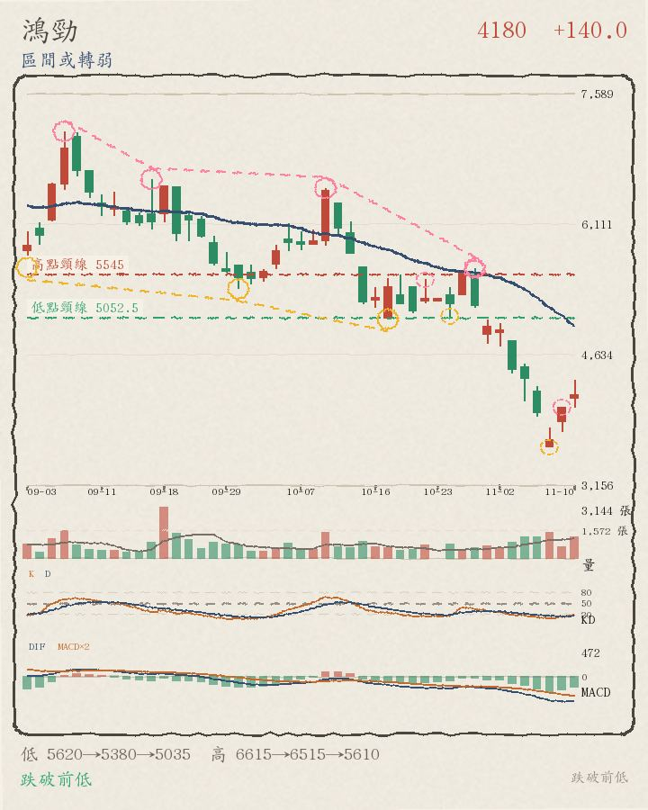
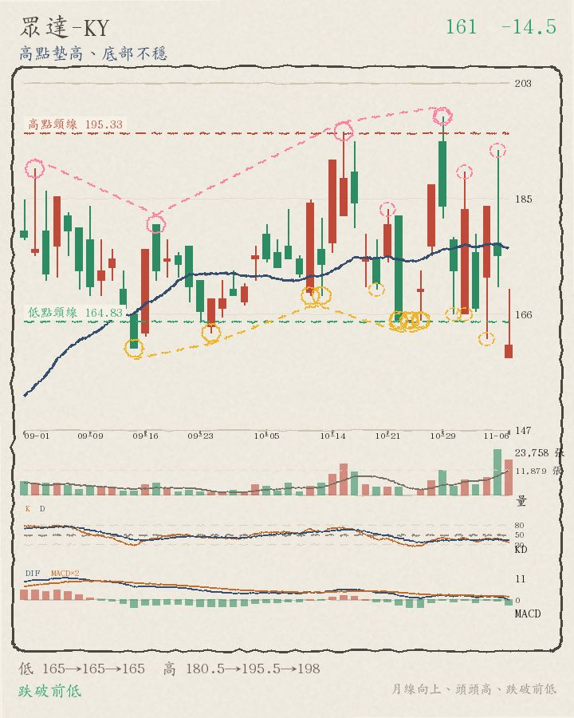
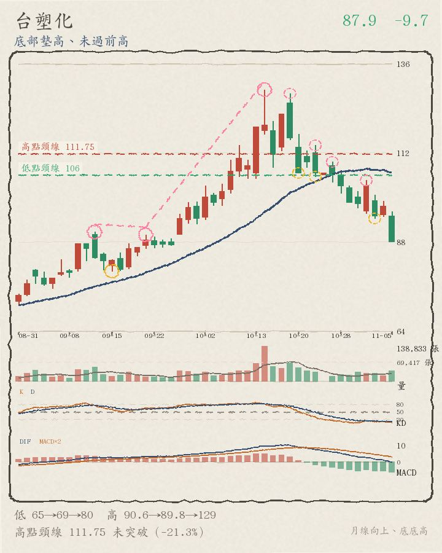
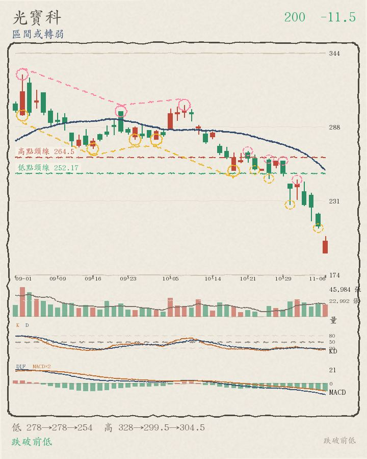
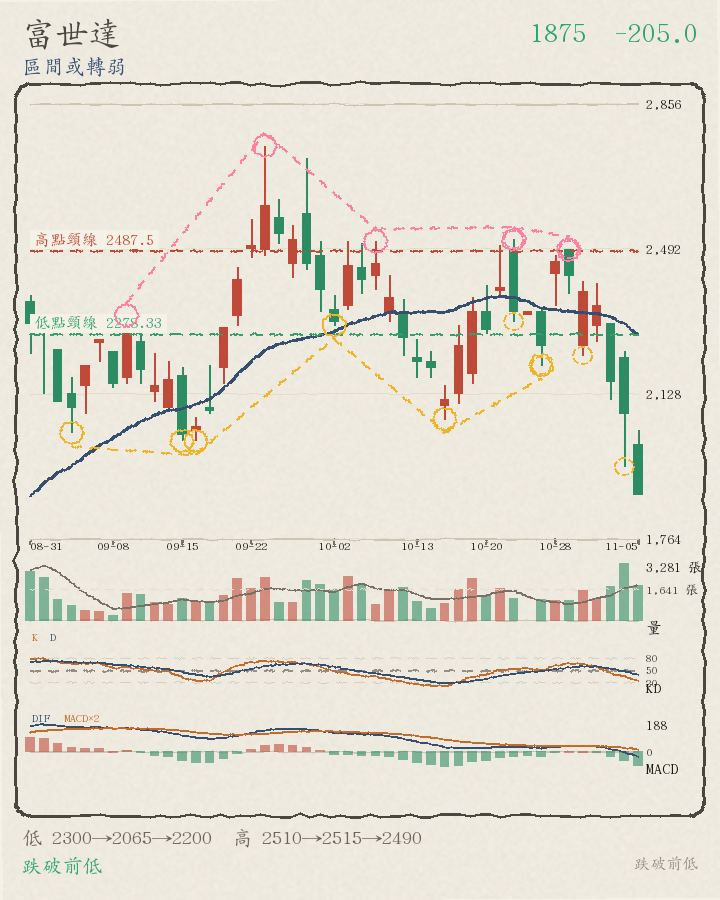
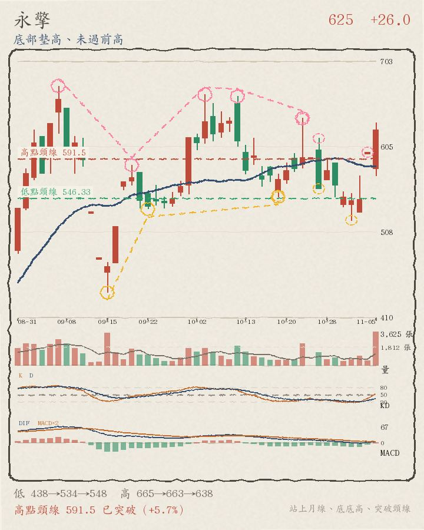
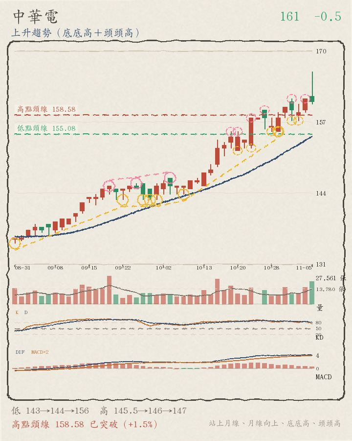
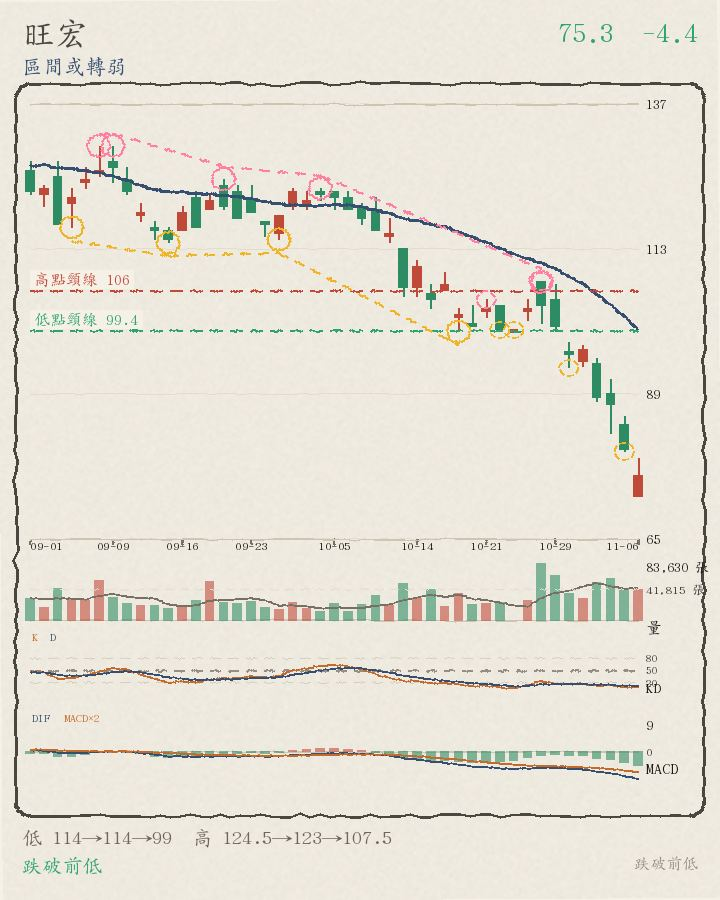
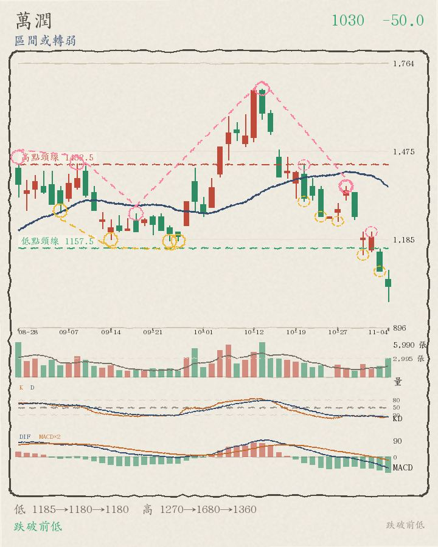
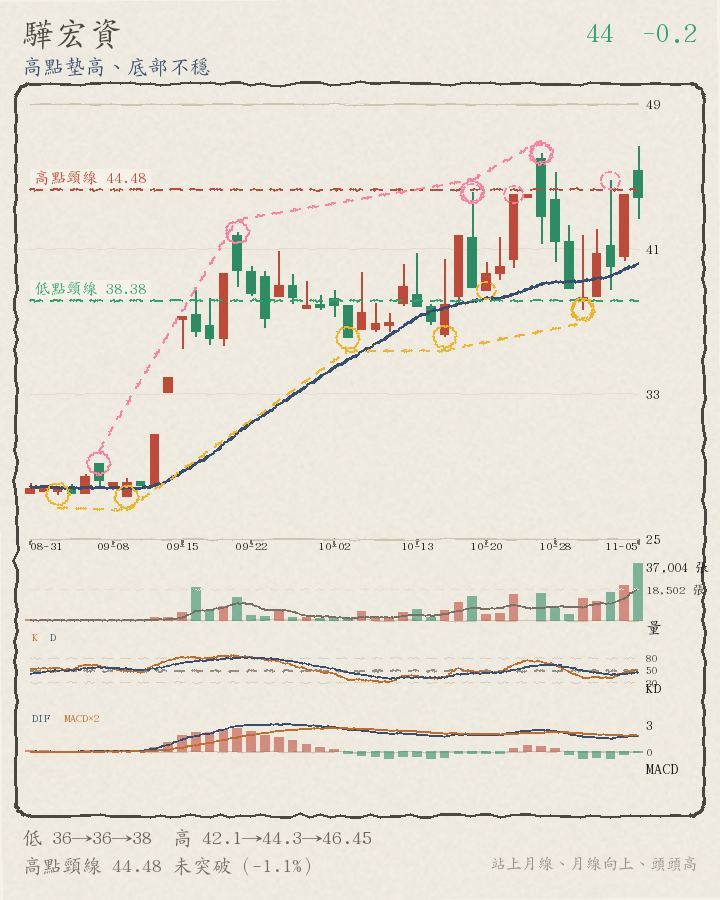

← 回股市觀察
盤中觀察 每日盤中觀察
2026/11/05 13:31 即時快照 · 當日盤中成交金額前 50 檔（上市 35＋上櫃 15）· 公開資料整理
→ 看當日逐檔技術線型分析（全檔） 歷次逐檔分析
41,541.62
加權指數 -1,407.29 點（-3.28%）
這是盤中快照，不是收盤結果。資料時間 2026-11-05 13:31:22（TWSE MIS 即時行情，上市／上櫃皆 delay=0）。
13:30 收盤（含最後一盤集合競價）會再變動；量能是以「已過交易時間比例」推估（尾盤大量時會低估）；
技術面標籤是把盤中現價代入原本以收盤價設計的規則（日線歷史只到前一交易日 9/14）。
統計範圍：候選池＝20261104 與 20261103 收盤成交值前段（上市 250／上櫃 130）取聯集，共 406 檔；再以今日盤中累計成交金額排序取
上市前 35＋上櫃前 15。漲跌家數是候選池內的數字，不是全市場（即時全市場家數證交所沒有開放端點）。
本頁為公開資料的整理與觀察，不構成投資建議，不報牌、不預測、不下買賣決策。
時程紀錄（本日盤中分析）▾ 點擊展開▴ 點擊收合
| 階段 | 時間 |
|---|
| 任務開始 | 由 Richard 提出時開始（手動執行） |
| 分析腳本執行 | 13:30:25 → 13:31:22（57.1 秒） |
| 資料快照時間 | 2026-11-05 13:31:22（行情時間戳 13:30:00） |
| 本頁產出 | 見頁尾版本時間 |
逐階段 log：
| 13:30:25 | START 盤中分析開始 |
| 13:30:25 | ① 抓即時指數（tse_t00 / otc_o00） |
| 13:30:29 | ② 建立候選池（20261104 與 20261103 成交值前段，上市＋上櫃） |
| 13:30:30 | 候選池共 407 檔 |
| 13:30:30 | ③ 抓即時候選池行情 |
| 13:31:21 | 取得即時報價 406 檔 |
| 13:31:21 | 候選池漲跌：漲 38／跌 366／平盤 2（快照時間 13:30:00） |
| 13:31:21 | ④ 選出 70 檔（上市 50＋上櫃 20），門檻 17.87 億 |
| 13:31:21 | ⑤ 抓日線歷史並算技術面 |
| 13:31:22 | ⑥ 產出（70 檔） |
K 線圖怎麼看：每一檔都附 K 線圖 —— 黃圈是轉折低點、粉圈是轉折高點（
虛線圈代表還沒確認的轉折）、藍線是月線（20 日均線）；頸線取最近兩個轉折低點之間的最高轉折高點，
突破頸線才會標示。
圖上另有兩條水平虛線、左側標數值：高點頸線（紅，最近兩個轉折低點之間的最高轉折高點）與低點頸線（綠，最近兩個轉折高點之間的最低轉折低點）；樣本不足就不畫。
紅色 K 棒＝收盤高於開盤、綠色＝收盤低於開盤。
大盤趨勢快篩（加權指數）（盤中近似） 資料日 2026/11/04・來源：證交所公開資料
主狀態：跌破頸線（M 頭成立）
前一交易日對照（11/03）：跌破頸線（M 頭成立）（量比 20 1.03） → 今日跌破頸線（M 頭成立）（量比 20 1.20）
指標、數值、判定（點開看 12 項明細：均線位置／排列、月線方向、頸線、轉折結構、位階、量價…）
加權指數11/4 收盤跌 358.63 點（-0.83%），收 42,948.91、跌破月線 47,046.87；月線還在下彎，MA5 這條短均還沒收復，離高點頸線 47,372.65 還差 9.34%。
- 均線位置：4 條均線站上 0 條；沒站上的是 MA5 44,551.35（收盤比它低 3.60%）、MA10 45,511.07（收盤比它低 5.63%）、MA20 47,046.87（收盤比它低 8.71%）、MA60 46,537.66（收盤比它低 7.71%）
- 月線方向：月線 MA20 現在 47,046.87，比 5 個交易日前低 883.46 點 → 下彎
- 量能：集中市場成交 11,769.3 億，比 5 日均量大不少（1.24 倍）、比 20 日均量大不少（1.20 倍）
- 關鍵價位：高點頸線 47,372.65，還差 9.34%；低點頸線 44,639.15已跌破
- 大小型股：加權 -0.83%、櫃買 -0.58%，兩邊同向

圖說：加權指數日 K（與個股圖相同標記）：黃圈＝轉折低點、粉圈＝轉折高點、虛線小圈＝還沒確認的轉折、藍線＝月線 MA20、水平虛線＝高點／低點頸線。最後一根是資料日當天。
本區塊為公開資料的技術面觀察，不構成投資建議，
不報牌、不預測、不下買賣決策。成交金額為集中市場總成交金額（含 ETF／權證），
與頁首摘要的「上市個股成交金額」口徑不同。標籤是統計，不是評分、也不是推薦。
上市 vs 上櫃（同期快篩）
加權 -0.83% vs 櫃買 -0.58%（同向） → 同向
（兩個市場分開寫，不合併成一個數字；櫃買為 TPEX 公開資料）
櫃買歷史：TPEX 逐日回補 130 根；來源：櫃買中心 www/zh-tw/indexInfo/sectinx（逐日，官方；OpenAPI tpex_index 只回當月）
（TPEX OpenAPI 只回當月，故逐日回補；歷史不足就不算該條均線並標「資料不足」，不用錯數字）
近 20 個交易日大盤狀態回溯（最新在上）（點開看逐日主狀態／量比／量價象限）
用同一支程式回算最近 20 個交易日（主狀態 S1~S8 與量比 20 皆為當日收盤當時的判定，
不是事後調整）；量比 20 未公布的日子寫「—」。
好條件最多的（前 10）
不好條件最多的（前 10）
好條件（7 項）：站上月線、月線向上、底底高、頭頭高、突破頸線、攻擊量（量增＋上漲）、守住今日高檔（距今日高點 1% 內）。
不好條件（7 項）：跌破前低、今日下跌、相對大盤弱、在月線之下、貼近今日低點（1% 內）、跌破昨日低點、月線下彎。
兩邊都是同一組日線資料＋盤中即時價算出來的「符合項目數」，只是把方向相反的條件分開數；
條件數不是評分或推薦，不構成投資建議。
逆勢上漲（加權下跌、個股上漲）（2 上市 2／上櫃 0）
盤中爆量（估量比 ≥ 1.5）（22 上市 15／上櫃 7）
跌破前低（線型轉弱）（57 上市 40／上櫃 17）
今日疲弱（跌幅前 10）（10 上市 5／上櫃 5）
逐檔（70 檔，依盤中成交金額排序）
台積電 2330 上市
2235 -25.0（-1.11%）
區間或轉弱 盤中成交值 711.53 億・全榜第 1 名（上市第 1 名）・相對大盤 +2.17
好條件 0/7：無
不好條件 4/7：跌破前低、今日下跌、在月線之下、月線下彎

13:31 盤中 2235（-1.11%），比加權指數強 2.17 個百分點、跌破月線 2430.5，離高點頸線 2484.17 還差 10.0%，轉折還沒走出明顯方向。
- 月線位置：現價 2235 在月線 2430.5 之下（-8.0%）；5 日線 2334 也在月線之下（短均在下）；月線向下
- 量能：以已過交易時間推估，今天成交量約是 20 日均量的 1.22 倍（量增），比 20 日均量大不少；下跌卻量增，量價背離
- 關鍵價位：已跌破前一個轉折低點；高點頸線 2484.17 還在現價上方 10.0%；前一交易日高點 2320（低於 3.7%）；今天盤中高點 2285（低於 2.2%）；今天盤中低點 2235（高於 0.0%）
- 轉折結構：低點 2350、2375、2375 與高點 2510、2590、2435 都沒有明顯遞增，屬於區間震盪或轉弱；還沒確認的轉折低點 10-27 2380、11-04 2235；還沒確認的轉折高點 10-22 2435、10-28 2430（圖上虛線小圈）
聯發科 2454 上市
3460 -255.0（-6.86%）
底部墊高、未過前高 盤中成交值 408.7 億・全榜第 2 名（上市第 2 名）・相對大盤 -3.58
好條件 1/7：底底高
不好條件 6/7：跌破前低、今日下跌、相對大盤弱、在月線之下、貼近今日低點（1% 內）、月線下彎

13:31 盤中 3460（-6.86%），比加權指數弱 3.58 個百分點、跌破月線 4225.75，離高點頸線 4275 還差 19.1%，底部還在墊高（但高點沒同步創高）。
- 月線位置：現價 3460 在月線 4225.75 之下（-18.1%）；5 日線 3864 也在月線之下（短均在下）；月線向下
- 量能：以已過交易時間推估，今天成交量約是 20 日均量的 1.46 倍（量增），比 20 日均量大不少；下跌卻量增，量價背離
- 關鍵價位：已跌破前一個轉折低點；高點頸線 4275 還在現價上方 19.1%；前一交易日高點 3760（低於 8.0%）；今天盤中高點 3715（低於 6.9%）；今天盤中低點 3450（高於 0.3%）
- 轉折結構：低點 3655、4430、4875 墊高（底底高），但高點 5480、5165、4245 沒有同步創高；還沒確認的轉折低點 10-27 3910、11-04 3455；還沒確認的轉折高點 10-28 4245、11-02 4070（圖上虛線小圈）
南亞 1303 上市
249 -27.5（-9.95%）
區間或轉弱 盤中成交值 231.94 億・全榜第 3 名（上市第 3 名）・相對大盤 -6.67
好條件 1/7：月線向上
不好條件 5/7：跌破前低、今日下跌、相對大盤弱、在月線之下、跌破昨日低點

13:31 盤中 249（-9.95%），比加權指數弱 6.67 個百分點、跌破月線 305.225，離高點頸線 323.38 還差 23.0%，轉折還沒走出明顯方向。
- 月線位置：現價 249 在月線 305.225 之下（-18.4%）；5 日線 291.3 也在月線之下（短均在下）；月線向上
- 量能：以已過交易時間推估，今天成交量約是 20 日均量的 0.92 倍（量平），比 20 日均量少一些
- 關鍵價位：已跌破前一個轉折低點；高點頸線 323.38 還在現價上方 23.0%；前一交易日高點 283（低於 12.0%）；今天盤中高點 269（低於 7.4%）；今天盤中低點 249（高於 0.0%）
- 轉折結構：低點 223、223、295 與高點 350.5、325.5、325 都沒有明顯遞增，屬於區間震盪或轉弱；還沒確認的轉折低點 10-27 290.5、11-04 261；還沒確認的轉折高點 10-29 325、11-02 308（圖上虛線小圈）
欣興 3037 上市
800 -88.0（-9.91%）
底部墊高、未過前高 盤中成交值 214.88 億・全榜第 4 名（上市第 4 名）・相對大盤 -6.63
好條件 1/7：底底高
不好條件 6/7：跌破前低、今日下跌、相對大盤弱、在月線之下、跌破昨日低點、月線下彎

13:31 盤中 800（-9.91%），比加權指數弱 6.63 個百分點、跌破月線 1104.55，離高點頸線 1138.33 還差 29.7%，底部還在墊高（但高點沒同步創高）。
- 月線位置：現價 800 在月線 1104.55 之下（-27.6%）；5 日線 963.2 也在月線之下（短均在下）；月線向下
- 量能：以已過交易時間推估，今天成交量約是 20 日均量的 1.51 倍（爆量），比 20 日均量大不少；下跌卻量增，量價背離
- 關鍵價位：已跌破前一個轉折低點；高點頸線 1138.33 還在現價上方 29.7%；前一交易日高點 916（低於 12.7%）；今天盤中高點 858（低於 6.8%）；今天盤中低點 800（高於 0.0%）
- 轉折結構：低點 873、932、1040 墊高（底底高），但高點 1200、1420、1180 沒有同步創高；還沒確認的轉折低點 10-27 1035、11-04 819；還沒確認的轉折高點 10-28 1145、11-02 1020（圖上虛線小圈）
國巨* 2327 上市
404.5 -44.5（-9.91%）
區間或轉弱 盤中成交值 205.68 億・全榜第 5 名（上市第 5 名）・相對大盤 -6.63
好條件 0/7：無
不好條件 6/7：跌破前低、今日下跌、相對大盤弱、在月線之下、跌破昨日低點、月線下彎

13:31 盤中 404.5（-9.91%），比加權指數弱 6.63 個百分點、跌破月線 551.775，離高點頸線 554.5 還差 27.1%，轉折還沒走出明顯方向。
- 月線位置：現價 404.5 在月線 551.775 之下（-26.7%）；5 日線 489.1 也在月線之下（短均在下）；月線向下
- 量能：以已過交易時間推估，今天成交量約是 20 日均量的 1.20 倍（量增），比 20 日均量大不少；下跌卻量增，量價背離
- 關鍵價位：已跌破前一個轉折低點；高點頸線 554.5 還在現價上方 27.1%；前一交易日高點 468.5（低於 13.7%）；今天盤中高點 436.5（低於 7.3%）；今天盤中低點 404.5（高於 0.0%）
- 轉折結構：低點 548、548、506 與高點 605、601、686 都沒有明顯遞增，屬於區間震盪或轉弱；還沒確認的轉折低點 10-27 507、11-04 417；還沒確認的轉折高點 10-21 559、10-28 550（圖上虛線小圈）
創意 3443 上市
6405 -710.0（-9.98%）
區間或轉弱 盤中成交值 196.44 億・全榜第 6 名（上市第 6 名）・相對大盤 -6.70
好條件 0/7：無
不好條件 5/7：跌破前低、今日下跌、相對大盤弱、在月線之下、月線下彎

13:31 盤中 6405（-9.98%），比加權指數弱 6.70 個百分點、跌破月線 7780，離高點頸線 8510 還差 24.7%，轉折還沒走出明顯方向。
- 月線位置：現價 6405 在月線 7780 之下（-17.7%）；5 日線 7294 也在月線之下（短均在下）；月線向下
- 量能：以已過交易時間推估，今天成交量約是 20 日均量的 1.81 倍（爆量），比 20 日均量大不少；下跌卻量增，量價背離
- 關鍵價位：已跌破前一個轉折低點；高點頸線 8510 還在現價上方 24.7%；前一交易日高點 7230（低於 11.4%）；今天盤中高點 6820（低於 6.1%）；今天盤中低點 6405（高於 0.0%）
- 轉折結構：低點 7730、7065、7200 與高點 8750、8490、8255 都沒有明顯遞增，屬於區間震盪或轉弱；還沒確認的轉折低點 10-27 7200、11-04 6390；還沒確認的轉折高點 10-21 8490、10-29 8255（圖上虛線小圈）
台達電 2308 上市
1125 -95.0（-7.79%）
高點墊高、底部不穩 盤中成交值 194.92 億・全榜第 7 名（上市第 7 名）・相對大盤 -4.51
好條件 1/7：頭頭高
不好條件 7/7：跌破前低、今日下跌、相對大盤弱、在月線之下、貼近今日低點（1% 內）、跌破昨日低點、月線下彎

13:31 盤中 1125（-7.79%），比加權指數弱 4.51 個百分點、跌破月線 1622，離高點頸線 1877.5 還差 40.1%，高點還在墊高（但底部沒同步墊高）。
- 月線位置：現價 1125 在月線 1622 之下（-30.6%）；5 日線 1332 也在月線之下（短均在下）；月線向下
- 量能：以已過交易時間推估，今天成交量約是 20 日均量的 1.44 倍（量增），比 20 日均量大不少；下跌卻量增，量價背離
- 關鍵價位：已跌破前一個轉折低點；高點頸線 1877.5 還在現價上方 40.1%；前一交易日高點 1305（低於 13.8%）；今天盤中高點 1190（低於 5.5%）；今天盤中低點 1120（高於 0.4%）
- 轉折結構：高點 1885、1965、2115 墊高（頭頭高），但低點 1725、1560、1810 沒有同步墊高；還沒確認的轉折低點 11-02 1255、11-04 1160；還沒確認的轉折高點 10-21 1660、10-28 1575（圖上虛線小圈）
南亞科 2408 上市
360 -39.5（-9.89%）
區間或轉弱 盤中成交值 193.78 億・全榜第 8 名（上市第 8 名）・相對大盤 -6.61
好條件 0/7：無
不好條件 6/7：跌破前低、今日下跌、相對大盤弱、在月線之下、跌破昨日低點、月線下彎

13:31 盤中 360（-9.89%），比加權指數弱 6.61 個百分點、跌破月線 459.625，離高點頸線 536.67 還差 32.9%，轉折還沒走出明顯方向。
- 月線位置：現價 360 在月線 459.625 之下（-21.7%）；5 日線 439.7 也在月線之下（短均在下）；月線向下
- 量能：以已過交易時間推估，今天成交量約是 20 日均量的 1.17 倍（量增），比 20 日均量大不少；下跌卻量增，量價背離
- 關鍵價位：已跌破前一個轉折低點；高點頸線 536.67 還在現價上方 32.9%；前一交易日高點 413（低於 12.8%）；今天盤中高點 381（低於 5.5%）；今天盤中低點 360（高於 0.0%）
- 轉折結構：低點 465.5、488、412 與高點 533、537、497.5 都沒有明顯遞增，屬於區間震盪或轉弱；還沒確認的轉折低點 10-22 412、11-04 375.5；還沒確認的轉折高點 10-21 444、10-29 497.5（圖上虛線小圈）
台光電 2383 上市
4100 -455.0（-9.99%）
底部墊高、未過前高 盤中成交值 172 億・全榜第 9 名（上市第 9 名）・相對大盤 -6.71
好條件 1/7：底底高
不好條件 6/7：跌破前低、今日下跌、相對大盤弱、在月線之下、跌破昨日低點、月線下彎

13:31 盤中 4100（-9.99%），比加權指數弱 6.71 個百分點、跌破月線 5188，離高點頸線 5221.67 還差 21.5%，底部還在墊高（但高點沒同步創高）。
- 月線位置：現價 4100 在月線 5188 之下（-21.0%）；5 日線 4668 也在月線之下（短均在下）；月線向下
- 量能：以已過交易時間推估，今天成交量約是 20 日均量的 1.40 倍（量增），比 20 日均量大不少；下跌卻量增，量價背離
- 關鍵價位：已跌破前一個轉折低點；高點頸線 5221.67 還在現價上方 21.5%；前一交易日高點 4680（低於 12.4%）；今天盤中高點 4335（低於 5.4%）；今天盤中低點 4100（高於 0.0%）
- 轉折結構：低點 4635、4855、4930 墊高（底底高），但高點 6325、5485、5295 沒有同步創高；還沒確認的轉折低點 10-27 4685、11-04 4300；還沒確認的轉折高點 10-29 5295、11-02 4835（圖上虛線小圈）
日月光投控 3711 上市
571 -56.0（-8.93%）
區間或轉弱 盤中成交值 152.14 億・全榜第 10 名（上市第 10 名）・相對大盤 -5.65
好條件 0/7：無
不好條件 7/7：跌破前低、今日下跌、相對大盤弱、在月線之下、貼近今日低點（1% 內）、跌破昨日低點、月線下彎

13:31 盤中 571（-8.93%），比加權指數弱 5.65 個百分點、跌破月線 687.45，離高點頸線 702.75 還差 18.7%，轉折還沒走出明顯方向。
- 月線位置：現價 571 在月線 687.45 之下（-16.9%）；5 日線 653.6 也在月線之下（短均在下）；月線向下
- 量能：以已過交易時間推估，今天成交量約是 20 日均量的 1.50 倍（爆量），比 20 日均量大不少；下跌卻量增，量價背離
- 關鍵價位：已跌破前一個轉折低點；高點頸線 702.75 還在現價上方 18.7%；前一交易日高點 641（低於 10.9%）；今天盤中高點 606（低於 5.8%）；今天盤中低點 568（高於 0.5%）
- 轉折結構：低點 678、715、639 與高點 765、699、709 都沒有明顯遞增，屬於區間震盪或轉弱；還沒確認的轉折低點 10-30 624、11-04 595；還沒確認的轉折高點 10-29 709、11-02 692（圖上虛線小圈）
聯電 2303 上市
98.4 -7.1（-6.73%）
底部墊高、未過前高 盤中成交值 144.5 億・全榜第 11 名（上市第 11 名）・相對大盤 -3.45
好條件 1/7：底底高
不好條件 7/7：跌破前低、今日下跌、相對大盤弱、在月線之下、貼近今日低點（1% 內）、跌破昨日低點、月線下彎

13:31 盤中 98.4（-6.73%），比加權指數弱 3.45 個百分點、跌破月線 128.625，離高點頸線 129.75 還差 24.2%，底部還在墊高（但高點沒同步創高）。
- 月線位置：現價 98.4 在月線 128.625 之下（-23.5%）；5 日線 109.1 也在月線之下（短均在下）；月線向下
- 量能：以已過交易時間推估，今天成交量約是 20 日均量的 0.94 倍（量平），比 20 日均量少一些
- 關鍵價位：已跌破前一個轉折低點；高點頸線 129.75 還在現價上方 24.2%；前一交易日高點 107.5（低於 8.5%）；今天盤中高點 104.5（低於 5.8%）；今天盤中低點 97.9（高於 0.5%）
- 轉折結構：低點 123、135、151.5 墊高（底底高），但高點 145.5、168.5、165 沒有同步創高；還沒確認的轉折低點 10-30 107、11-04 100；還沒確認的轉折高點 10-22 131、10-28 128.5（圖上虛線小圈）
健策 3653 上市
5805 -645.0（-10.00%）
區間或轉弱 盤中成交值 137.35 億・全榜第 12 名（上市第 12 名）・相對大盤 -6.72
好條件 0/7：無
不好條件 4/7：今日下跌、相對大盤弱、在月線之下、月線下彎

13:31 盤中 5805（-10.00%），比加權指數弱 6.72 個百分點、跌破月線 6570.5，離高點頸線 6625 還差 12.4%，轉折還沒走出明顯方向。
- 月線位置：現價 5805 在月線 6570.5 之下（-11.7%）；5 日線 6305 也在月線之下（短均在下）；月線向下
- 量能：以已過交易時間推估，今天成交量約是 20 日均量的 1.72 倍（爆量），比 20 日均量大不少；下跌卻量增，量價背離
- 關鍵價位：高點頸線 6625 還沒突破，差 12.4%；前一交易日高點 6595（低於 12.0%）；今天盤中高點 6180（低於 6.1%）；今天盤中低點 5805（高於 0.0%）
- 轉折結構：低點 5210、6760、5710 與高點 7330、6985、6655 都沒有明顯遞增，屬於區間震盪或轉弱；還沒確認的轉折低點 10-30 5995、11-04 5800；還沒確認的轉折高點 10-29 6655、11-04 6595（圖上虛線小圈）
南電 8046 上市
972 -108.0（-10.00%）
底部墊高、未過前高 盤中成交值 130.23 億・全榜第 13 名（上市第 13 名）・相對大盤 -6.72
好條件 1/7：底底高
不好條件 6/7：跌破前低、今日下跌、相對大盤弱、在月線之下、跌破昨日低點、月線下彎

13:31 盤中 972（-10.00%），比加權指數弱 6.72 個百分點、跌破月線 1317.75，離高點頸線 1396.67 還差 30.4%，底部還在墊高（但高點沒同步創高）。
- 月線位置：現價 972 在月線 1317.75 之下（-26.2%）；5 日線 1155 也在月線之下（短均在下）；月線向下
- 量能：以已過交易時間推估，今天成交量約是 20 日均量的 1.61 倍（爆量），比 20 日均量大不少；下跌卻量增，量價背離
- 關鍵價位：已跌破前一個轉折低點；高點頸線 1396.67 還在現價上方 30.4%；前一交易日高點 1100（低於 11.6%）；今天盤中高點 1050（低於 7.4%）；今天盤中低點 972（高於 0.0%）
- 轉折結構：低點 1010、1025、1050 墊高（底底高），但高點 1125、1560、1400 沒有同步創高；還沒確認的轉折低點 10-28 1235、11-04 987；還沒確認的轉折高點 10-27 1390、11-02 1220（圖上虛線小圈）
景碩 3189 上市
740 -82.0（-9.98%）
底部墊高、未過前高 盤中成交值 129.72 億・全榜第 14 名（上市第 14 名）・相對大盤 -6.70
好條件 1/7：底底高
不好條件 6/7：跌破前低、今日下跌、相對大盤弱、在月線之下、跌破昨日低點、月線下彎

13:31 盤中 740（-9.98%），比加權指數弱 6.70 個百分點、跌破月線 985.05，離高點頸線 1060 還差 30.2%，底部還在墊高（但高點沒同步創高）。
- 月線位置：現價 740 在月線 985.05 之下（-24.9%）；5 日線 888.4 也在月線之下（短均在下）；月線向下
- 量能：以已過交易時間推估，今天成交量約是 20 日均量的 1.17 倍（量增），比 20 日均量大不少；下跌卻量增，量價背離
- 關鍵價位：已跌破前一個轉折低點；高點頸線 1060 還在現價上方 30.2%；前一交易日高點 836（低於 11.5%）；今天盤中高點 787（低於 6.0%）；今天盤中低點 740（高於 0.0%）
- 轉折結構：低點 766、784、941 墊高（底底高），但高點 835、1150、1065 沒有同步創高；還沒確認的轉折低點 10-27 928、11-04 754；還沒確認的轉折高點 10-22 1065、10-27 1055（圖上虛線小圈）
富喬 1815 上櫃
121.5 -13.5（-10.00%）
底部墊高、未過前高 盤中成交值 119.75 億・全榜第 15 名（上櫃第 1 名）・相對大盤 -6.72
好條件 2/7：月線向上、底底高
不好條件 5/7：跌破前低、今日下跌、相對大盤弱、在月線之下、跌破昨日低點

13:31 盤中 121.5（-10.00%），比加權指數弱 6.72 個百分點、跌破月線 136.775，離高點頸線 146.25 還差 16.9%，底部還在墊高（但高點沒同步創高）。
- 月線位置：現價 121.5 在月線 136.775 之下（-11.2%）；5 日線 133.7 也在月線之下（短均在下）；月線向上
- 量能：以已過交易時間推估，今天成交量約是 20 日均量的 0.93 倍（量平），比 20 日均量少一些
- 關鍵價位：已跌破前一個轉折低點；高點頸線 146.25 還在現價上方 16.9%；前一交易日高點 143.5（低於 15.3%）；今天盤中高點 132（低於 8.0%）；今天盤中低點 121.5（高於 0.0%）
- 轉折結構：低點 111、113、124 墊高（底底高），但高點 129.5、161.5、149 沒有同步創高；還沒確認的轉折低點 11-02 122、11-04 127；還沒確認的轉折高點 11-02 139、11-04 143.5（圖上虛線小圈）
臻鼎-KY 4958 上市
394 -39.0（-9.01%）
底部墊高、未過前高 盤中成交值 114 億・全榜第 16 名（上市第 15 名）・相對大盤 -5.73
好條件 1/7：底底高
不好條件 7/7：跌破前低、今日下跌、相對大盤弱、在月線之下、貼近今日低點（1% 內）、跌破昨日低點、月線下彎

13:31 盤中 394（-9.01%），比加權指數弱 5.73 個百分點、跌破月線 539.1，離高點頸線 502 還差 21.5%，底部還在墊高（但高點沒同步創高）。
- 月線位置：現價 394 在月線 539.1 之下（-26.9%）；5 日線 473.8 也在月線之下（短均在下）；月線向下
- 量能：以已過交易時間推估，今天成交量約是 20 日均量的 0.97 倍（量平），跟 20 日均量差不多
- 關鍵價位：已跌破前一個轉折低點；高點頸線 502 還在現價上方 21.5%；前一交易日高點 453.5（低於 13.1%）；今天盤中高點 429.5（低於 8.3%）；今天盤中低點 391.5（高於 0.6%）
- 轉折結構：低點 446.5、463.5、518 墊高（底底高），但高點 505、613、614 沒有同步創高；還沒確認的轉折低點 10-27 519、11-04 406；還沒確認的轉折高點 10-29 555、11-02 499（圖上虛線小圈）
鴻海 2317 上市
235 -5.0（-2.08%）
區間或轉弱 盤中成交值 112.63 億・全榜第 17 名（上市第 16 名）・相對大盤 +1.20
好條件 0/7：無
不好條件 6/7：跌破前低、今日下跌、在月線之下、貼近今日低點（1% 內）、跌破昨日低點、月線下彎

13:31 盤中 235（-2.08%），比加權指數強 1.20 個百分點、跌破月線 245.9，離高點頸線 256.42 還差 8.4%，轉折還沒走出明顯方向。
- 月線位置：現價 235 在月線 245.9 之下（-4.4%）；5 日線 246 也在月線之上（短均在上）；月線向下
- 量能：以已過交易時間推估，今天成交量約是 20 日均量的 1.13 倍（量增），比 20 日均量大一些；下跌卻量增，量價背離
- 關鍵價位：已跌破前一個轉折低點；高點頸線 256.42 還在現價上方 8.4%；前一交易日高點 247.5（低於 5.1%）；今天盤中高點 241.5（低於 2.7%）；今天盤中低點 234（高於 0.4%）
- 轉折結構：低點 243.5、247、237 與高點 257、266.5、253.5 都沒有明顯遞增，屬於區間震盪或轉弱；還沒確認的轉折低點 10-30 240、11-04 236.5；還沒確認的轉折高點 10-29 253.5、11-02 252（圖上虛線小圈）
穩懋 3105 上櫃
451 -50.0（-9.98%）
區間或轉弱 盤中成交值 108.81 億・全榜第 18 名（上櫃第 2 名）・相對大盤 -6.70
好條件 1/7：月線向上
不好條件 5/7：跌破前低、今日下跌、相對大盤弱、在月線之下、跌破昨日低點

13:31 盤中 451（-9.98%），比加權指數弱 6.70 個百分點、跌破月線 536，離高點頸線 595 還差 24.2%，轉折還沒走出明顯方向。
- 月線位置：現價 451 在月線 536 之下（-15.9%）；5 日線 558.2 也在月線之上（短均在上）；月線向上
- 量能：以已過交易時間推估，今天成交量約是 20 日均量的 1.00 倍（量平），跟 20 日均量差不多
- 關鍵價位：已跌破前一個轉折低點；高點頸線 595 還在現價上方 24.2%；前一交易日高點 525（低於 14.1%）；今天盤中高點 487（低於 7.4%）；今天盤中低點 451（高於 0.0%）
- 轉折結構：低點 482、454、479 與高點 492、478、630 都沒有明顯遞增，屬於區間震盪或轉弱；還沒確認的轉折低點 10-30 541、11-04 477；還沒確認的轉折高點 10-29 594、11-02 596（圖上虛線小圈）
台燿 6274 上櫃
1005 -110.0（-9.87%）
區間或轉弱 盤中成交值 103.47 億・全榜第 19 名（上櫃第 3 名）・相對大盤 -6.59
好條件 0/7：無
不好條件 6/7：跌破前低、今日下跌、相對大盤弱、在月線之下、跌破昨日低點、月線下彎

13:31 盤中 1005（-9.87%），比加權指數弱 6.59 個百分點、跌破月線 1491.25，離高點頸線 1447.5 還差 30.6%，轉折還沒走出明顯方向。
- 月線位置：現價 1005 在月線 1491.25 之下（-32.6%）；5 日線 1214 也在月線之下（短均在下）；月線向下
- 量能：以已過交易時間推估，今天成交量約是 20 日均量的 0.89 倍（量平），比 20 日均量少一些
- 關鍵價位：已跌破前一個轉折低點；高點頸線 1447.5 還在現價上方 30.6%；前一交易日高點 1145（低於 12.2%）；今天盤中高點 1045（低於 3.8%）；今天盤中低點 1005（高於 0.0%）
- 轉折結構：低點 1395、1295、1275 與高點 1460、1835、1450 都沒有明顯遞增，屬於區間震盪或轉弱；還沒確認的轉折低點 10-27 1280、11-04 1010；還沒確認的轉折高點 10-27 1450、10-29 1450（圖上虛線小圈）
環球晶 6488 上櫃
564 -55.0（-8.89%）
區間或轉弱 盤中成交值 102.47 億・全榜第 20 名（上櫃第 4 名）・相對大盤 -5.61
好條件 0/7：無
不好條件 6/7：跌破前低、今日下跌、相對大盤弱、在月線之下、跌破昨日低點、月線下彎

13:31 盤中 564（-8.89%），比加權指數弱 5.61 個百分點、跌破月線 904，離高點頸線 1013.33 還差 44.3%，轉折還沒走出明顯方向。
- 月線位置：現價 564 在月線 904 之下（-37.6%）；5 日線 726.8 也在月線之下（短均在下）；月線向下
- 量能：以已過交易時間推估，今天成交量約是 20 日均量的 1.53 倍（爆量），比 20 日均量大不少；下跌卻量增，量價背離
- 關鍵價位：已跌破前一個轉折低點；高點頸線 1013.33 還在現價上方 44.3%；前一交易日高點 688（低於 18.0%）；今天盤中高點 619（低於 8.9%）；今天盤中低點 558（高於 1.1%）
- 轉折結構：低點 931、875、872 與高點 1015、1010、1260 都沒有明顯遞增，屬於區間震盪或轉弱；還沒確認的轉折低點 10-27 807、11-04 617；還沒確認的轉折高點 10-21 903、10-28 860（圖上虛線小圈）
華邦電 2344 上市
127.5 -14.0（-9.89%）
區間或轉弱 盤中成交值 101.36 億・全榜第 21 名（上市第 17 名）・相對大盤 -6.61
好條件 0/7：無
不好條件 6/7：跌破前低、今日下跌、相對大盤弱、在月線之下、跌破昨日低點、月線下彎

13:31 盤中 127.5（-9.89%），比加權指數弱 6.61 個百分點、跌破月線 162.35，離高點頸線 181 還差 29.6%，轉折還沒走出明顯方向。
- 月線位置：現價 127.5 在月線 162.35 之下（-21.5%）；5 日線 156.9 也在月線之下（短均在下）；月線向下
- 量能：以已過交易時間推估，今天成交量約是 20 日均量的 1.23 倍（量增），比 20 日均量大不少；下跌卻量增，量價背離
- 關鍵價位：已跌破前一個轉折低點；高點頸線 181 還在現價上方 29.6%；前一交易日高點 148（低於 13.9%）；今天盤中高點 136（低於 6.2%）；今天盤中低點 127.5（高於 0.0%）
- 轉折結構：低點 174、151、151 與高點 180.5、184、178.5 都沒有明顯遞增，屬於區間震盪或轉弱；還沒確認的轉折低點 10-22 154、11-04 132.5；還沒確認的轉折高點 10-21 161.5、10-29 178.5（圖上虛線小圈）
大立光 3008 上市
4525 -485.0（-9.68%）
區間或轉弱 盤中成交值 100.64 億・全榜第 22 名（上市第 18 名）・相對大盤 -6.40
好條件 0/7：無
不好條件 7/7：跌破前低、今日下跌、相對大盤弱、在月線之下、貼近今日低點（1% 內）、跌破昨日低點、月線下彎

13:31 盤中 4525（-9.68%），比加權指數弱 6.40 個百分點、跌破月線 6230.5，離高點頸線 6410 還差 29.4%，轉折還沒走出明顯方向。
- 月線位置：現價 4525 在月線 6230.5 之下（-27.4%）；5 日線 5338 也在月線之下（短均在下）；月線向下
- 量能：以已過交易時間推估，今天成交量約是 20 日均量的 0.80 倍（量平），比 20 日均量少很多
- 關鍵價位：已跌破前一個轉折低點；高點頸線 6410 還在現價上方 29.4%；前一交易日高點 5100（低於 11.3%）；今天盤中高點 4905（低於 7.7%）；今天盤中低點 4520（高於 0.1%）
- 轉折結構：低點 5740、6355、5970 與高點 6750、7460、6370 都沒有明顯遞增，屬於區間震盪或轉弱；還沒確認的轉折低點 10-27 5960、11-04 4730；還沒確認的轉折高點 10-21 6450、10-28 6370（圖上虛線小圈）
奇鋐 3017 上市
2560 -260.0（-9.22%）
區間或轉弱 盤中成交值 99.51 億・全榜第 23 名（上市第 19 名）・相對大盤 -5.94
好條件 0/7：無
不好條件 7/7：跌破前低、今日下跌、相對大盤弱、在月線之下、貼近今日低點（1% 內）、跌破昨日低點、月線下彎

13:31 盤中 2560（-9.22%），比加權指數弱 5.94 個百分點、跌破月線 3229，離高點頸線 3390 還差 24.5%，轉折還沒走出明顯方向。
- 月線位置：現價 2560 在月線 3229 之下（-20.7%）；5 日線 3003 也在月線之下（短均在下）；月線向下
- 量能：以已過交易時間推估，今天成交量約是 20 日均量的 1.41 倍（量增），比 20 日均量大不少；下跌卻量增，量價背離
- 關鍵價位：已跌破前一個轉折低點；高點頸線 3390 還在現價上方 24.5%；前一交易日高點 2970（低於 13.8%）；今天盤中高點 2760（低於 7.2%）；今天盤中低點 2545（高於 0.6%）
- 轉折結構：低點 3100、3285、3050 與高點 3600、3700、3450 都沒有明顯遞增，屬於區間震盪或轉弱；還沒確認的轉折低點 10-30 2885、11-04 2670；還沒確認的轉折高點 10-28 3330、11-03 3115（圖上虛線小圈）
金像電 2368 上市
868 -96.0（-9.96%）
區間或轉弱 盤中成交值 88.92 億・全榜第 24 名（上市第 20 名）・相對大盤 -6.68
好條件 0/7：無
不好條件 6/7：跌破前低、今日下跌、相對大盤弱、在月線之下、跌破昨日低點、月線下彎

13:31 盤中 868（-9.96%），比加權指數弱 6.68 個百分點、跌破月線 1157.2，離高點頸線 1082.5 還差 19.8%，轉折還沒走出明顯方向。
- 月線位置：現價 868 在月線 1157.2 之下（-25.0%）；5 日線 1025.8 也在月線之下（短均在下）；月線向下
- 量能：以已過交易時間推估，今天成交量約是 20 日均量的 0.95 倍（量平），跟 20 日均量差不多
- 關鍵價位：已跌破前一個轉折低點；高點頸線 1082.5 還在現價上方 19.8%；前一交易日高點 1015（低於 14.5%）；今天盤中高點 944（低於 8.1%）；今天盤中低點 868（高於 0.0%）
- 轉折結構：低點 1030、950、1120 與高點 1310、1295、1190 都沒有明顯遞增，屬於區間震盪或轉弱；還沒確認的轉折低點 10-27 1055、11-04 901；還沒確認的轉折高點 10-29 1190、11-02 1080（圖上虛線小圈）
聯亞 3081 上櫃
1890 -210.0（-10.00%）
區間或轉弱 盤中成交值 88.36 億・全榜第 25 名（上櫃第 5 名）・相對大盤 -6.72
好條件 0/7：無
不好條件 6/7：跌破前低、今日下跌、相對大盤弱、在月線之下、跌破昨日低點、月線下彎

13:31 盤中 1890（-10.00%），比加權指數弱 6.72 個百分點、跌破月線 2599.25，離高點頸線 2940 還差 35.7%，轉折還沒走出明顯方向。
- 月線位置：現價 1890 在月線 2599.25 之下（-27.3%）；5 日線 2327 也在月線之下（短均在下）；月線向下
- 量能：以已過交易時間推估，今天成交量約是 20 日均量的 1.37 倍（量增），比 20 日均量大不少；下跌卻量增，量價背離
- 關鍵價位：已跌破前一個轉折低點；高點頸線 2940 還在現價上方 35.7%；前一交易日高點 2195（低於 13.9%）；今天盤中高點 2045（低於 7.6%）；今天盤中低點 1890（高於 0.0%）
- 轉折結構：低點 2650、2585、2365 與高點 2950、3210、2795 都沒有明顯遞增，屬於區間震盪或轉弱；還沒確認的轉折低點 10-22 2365、11-04 1960；還沒確認的轉折高點 10-29 2795、11-02 2465（圖上虛線小圈）
緯穎 6669 上市
1645 -140.0（-7.84%）
區間或轉弱 盤中成交值 82.58 億・全榜第 26 名（上市第 21 名）・相對大盤 -4.56
好條件 0/7：無
不好條件 7/7：跌破前低、今日下跌、相對大盤弱、在月線之下、貼近今日低點（1% 內）、跌破昨日低點、月線下彎

13:31 盤中 1645（-7.84%），比加權指數弱 4.56 個百分點、跌破月線 1972.25，離高點頸線 2005 還差 18.0%，轉折還沒走出明顯方向。
- 月線位置：現價 1645 在月線 1972.25 之下（-16.6%）；5 日線 1814 也在月線之下（短均在下）；月線向下
- 量能：以已過交易時間推估，今天成交量約是 20 日均量的 1.11 倍（量增），比 20 日均量大一些；下跌卻量增，量價背離
- 關鍵價位：已跌破前一個轉折低點；高點頸線 2005 還在現價上方 18.0%；前一交易日高點 1810（低於 9.1%）；今天盤中高點 1755（低於 6.3%）；今天盤中低點 1640（高於 0.3%）
- 轉折結構：低點 2075、2080、1795 與高點 2335、2020、1990 都沒有明顯遞增，屬於區間震盪或轉弱；還沒確認的轉折低點 11-02 1765、11-04 1700；還沒確認的轉折高點 10-28 1990、11-03 1840（圖上虛線小圈）
信驊 5274 上櫃
12635 -1400.0（-9.98%）
區間或轉弱 盤中成交值 80.23 億・全榜第 27 名（上櫃第 6 名）・相對大盤 -6.70
好條件 0/7：無
不好條件 6/7：跌破前低、今日下跌、相對大盤弱、在月線之下、跌破昨日低點、月線下彎

13:31 盤中 12635（-9.98%），比加權指數弱 6.70 個百分點、跌破月線 16512.8，離高點頸線 17245 還差 26.7%，轉折還沒走出明顯方向。
- 月線位置：現價 12635 在月線 16512.8 之下（-23.5%）；5 日線 15468 也在月線之下（短均在下）；月線向下
- 量能：以已過交易時間推估，今天成交量約是 20 日均量的 1.91 倍（爆量），比 20 日均量大不少；下跌卻量增，量價背離
- 關鍵價位：已跌破前一個轉折低點；高點頸線 17245 還在現價上方 26.7%；前一交易日高點 14975（低於 15.6%）；今天盤中高點 13500（低於 6.4%）；今天盤中低點 12635（高於 0.0%）
- 轉折結構：低點 17170、15975、15500 與高點 19895、18465、17490 都沒有明顯遞增，屬於區間震盪或轉弱；還沒確認的轉折低點 10-27 15800、11-04 13260；還沒確認的轉折高點 10-22 17000、10-29 17490（圖上虛線小圈）
致茂 2360 上市
1335 -135.0（-9.18%）
區間或轉弱 盤中成交值 70.14 億・全榜第 28 名（上市第 22 名）・相對大盤 -5.90
好條件 0/7：無
不好條件 7/7：跌破前低、今日下跌、相對大盤弱、在月線之下、貼近今日低點（1% 內）、跌破昨日低點、月線下彎

13:31 盤中 1335（-9.18%），比加權指數弱 5.90 個百分點、跌破月線 2015.75，離高點頸線 2090 還差 36.1%，轉折還沒走出明顯方向。
- 月線位置：現價 1335 在月線 2015.75 之下（-33.8%）；5 日線 1686 也在月線之下（短均在下）；月線向下
- 量能：以已過交易時間推估，今天成交量約是 20 日均量的 1.90 倍（爆量），比 20 日均量大不少；下跌卻量增，量價背離
- 關鍵價位：已跌破前一個轉折低點；高點頸線 2090 還在現價上方 36.1%；前一交易日高點 1530（低於 12.7%）；今天盤中高點 1465（低於 8.9%）；今天盤中低點 1325（高於 0.8%）
- 轉折結構：低點 2070、2025、1945 與高點 2560、2110、2070 都沒有明顯遞增，屬於區間震盪或轉弱；還沒確認的轉折低點 10-27 1905、11-04 1395；還沒確認的轉折高點 10-22 2110、10-29 2070（圖上虛線小圈）
世芯-KY 3661 上市
2965 -215.0（-6.76%）
區間或轉弱 盤中成交值 70.09 億・全榜第 29 名（上市第 23 名）・相對大盤 -3.48
好條件 0/7：無
不好條件 5/7：跌破前低、今日下跌、相對大盤弱、在月線之下、月線下彎

13:31 盤中 2965（-6.76%），比加權指數弱 3.48 個百分點、跌破月線 3733.25，離高點頸線 3870 還差 23.4%，轉折還沒走出明顯方向。
- 月線位置：現價 2965 在月線 3733.25 之下（-20.6%）；5 日線 3364 也在月線之下（短均在下）；月線向下
- 量能：以已過交易時間推估，今天成交量約是 20 日均量的 1.06 倍（量平），比 20 日均量大一些
- 關鍵價位：已跌破前一個轉折低點；高點頸線 3870 還在現價上方 23.4%；前一交易日高點 3235（低於 8.3%）；今天盤中高點 3150（低於 5.9%）；今天盤中低點 2915（高於 1.7%）
- 轉折結構：低點 2630、3585、3260 與高點 4490、3835、3825 都沒有明顯遞增，屬於區間震盪或轉弱；還沒確認的轉折低點 10-27 3455、11-04 2955；還沒確認的轉折高點 10-21 3835、10-28 3825（圖上虛線小圈）
群聯 8299 上櫃
1575 -135.0（-7.89%）
區間或轉弱 盤中成交值 67.5 億・全榜第 30 名（上櫃第 7 名）・相對大盤 -4.61
好條件 0/7：無
不好條件 6/7：跌破前低、今日下跌、相對大盤弱、在月線之下、跌破昨日低點、月線下彎

13:31 盤中 1575（-7.89%），比加權指數弱 4.61 個百分點、跌破月線 1925，離高點頸線 1945 還差 19.0%，轉折還沒走出明顯方向。
- 月線位置：現價 1575 在月線 1925 之下（-18.2%）；5 日線 1851 也在月線之下（短均在下）；月線向下
- 量能：以已過交易時間推估，今天成交量約是 20 日均量的 1.67 倍（爆量），比 20 日均量大不少；下跌卻量增，量價背離
- 關鍵價位：已跌破前一個轉折低點；高點頸線 1945 還在現價上方 19.0%；前一交易日高點 1745（低於 9.7%）；今天盤中高點 1660（低於 5.1%）；今天盤中低點 1550（高於 1.6%）
- 轉折結構：低點 2080、1785、1865 與高點 2160、2350、2090 都沒有明顯遞增，屬於區間震盪或轉弱；還沒確認的轉折低點 10-27 1865、11-04 1590；還沒確認的轉折高點 10-22 1945、10-29 2090（圖上虛線小圈）
華新科 2492 上市
281.5 -30.5（-9.78%）
區間或轉弱 盤中成交值 67.37 億・全榜第 31 名（上市第 24 名）・相對大盤 -6.50
好條件 1/7：月線向上
不好條件 6/7：跌破前低、今日下跌、相對大盤弱、在月線之下、貼近今日低點（1% 內）、跌破昨日低點

13:31 盤中 281.5（-9.78%），比加權指數弱 6.50 個百分點、跌破月線 385.575，離高點頸線 428.33 還差 34.3%，轉折還沒走出明顯方向。
- 月線位置：現價 281.5 在月線 385.575 之下（-27.0%）；5 日線 358.5 也在月線之下（短均在下）；月線向上
- 量能：以已過交易時間推估，今天成交量約是 20 日均量的 0.71 倍（量平），比 20 日均量少很多
- 關鍵價位：已跌破前一個轉折低點；高點頸線 428.33 還在現價上方 34.3%；前一交易日高點 327.5（低於 14.0%）；今天盤中高點 306.5（低於 8.2%）；今天盤中低點 281（高於 0.2%）
- 轉折結構：低點 298.5、376.5、355.5 與高點 431.5、422、431.5 都沒有明顯遞增，屬於區間震盪或轉弱；還沒確認的轉折低點 10-22 365、11-04 288.5；還沒確認的轉折高點 10-22 422、10-29 431.5（圖上虛線小圈）
台玻 1802 上市
60.1 -6.6（-9.90%）
底部墊高、未過前高 盤中成交值 67.12 億・全榜第 32 名（上市第 25 名）・相對大盤 -6.62
好條件 2/7：月線向上、底底高
不好條件 4/7：今日下跌、相對大盤弱、在月線之下、跌破昨日低點

13:31 盤中 60.1（-9.90%），比加權指數弱 6.62 個百分點、跌破月線 64.965，離高點頸線 69.67 還差 13.7%，底部還在墊高（但高點沒同步創高）。
- 月線位置：現價 60.1 在月線 64.965 之下（-7.5%）；5 日線 64.48 也在月線之下（短均在下）；月線向上
- 量能：以已過交易時間推估，今天成交量約是 20 日均量的 0.86 倍（量平），比 20 日均量少一些
- 關鍵價位：高點頸線 69.67 還沒突破，差 13.7%；前一交易日高點 69.6（低於 13.6%）；今天盤中高點 65（低於 7.5%）；今天盤中低點 60.1（高於 0.0%）
- 轉折結構：低點 56、56.6、58.8 墊高（底底高），但高點 61.7、61.7、73.6 沒有同步創高；還沒確認的轉折低點 10-30 58.8、11-04 62.6；還沒確認的轉折高點 10-28 68.4、11-03 70（圖上虛線小圈）
金山電 8042 上櫃
131.5 -1.5（-1.13%）
區間或轉弱 盤中成交值 66.51 億・全榜第 33 名（上櫃第 8 名）・相對大盤 +2.15
好條件 1/7：月線向上
不好條件 2/7：今日下跌、在月線之下

13:31 盤中 131.5（-1.13%），比加權指數強 2.15 個百分點、跌破月線 136.4，離高點頸線 141 還差 6.7%，轉折還沒走出明顯方向。
- 月線位置：現價 131.5 在月線 136.4 之下（-3.6%）；5 日線 130.5 也在月線之下（短均在下）；月線向上
- 量能：以已過交易時間推估，今天成交量約是 20 日均量的 3.09 倍（爆量），比 20 日均量大不少；下跌卻量增，量價背離
- 關鍵價位：高點頸線 141 還沒突破，差 6.7%；前一交易日高點 133（低於 1.1%）；今天盤中高點 145（低於 9.3%）；今天盤中低點 123（高於 6.9%）
- 轉折結構：低點 110、129、129.5 與高點 166、154.5、144.5 都沒有明顯遞增，屬於區間震盪或轉弱；還沒確認的轉折低點 10-29 131、11-04 120；還沒確認的轉折高點 10-29 144.5、11-03 137.5（圖上虛線小圈）
玉晶光 3406 上市
846 -93.0（-9.90%）
區間或轉弱 盤中成交值 66.09 億・全榜第 34 名（上市第 26 名）・相對大盤 -6.62
好條件 1/7：月線向上
不好條件 5/7：跌破前低、今日下跌、相對大盤弱、在月線之下、跌破昨日低點

13:31 盤中 846（-9.90%），比加權指數弱 6.62 個百分點、跌破月線 1099，離高點頸線 1330 還差 36.4%，轉折還沒走出明顯方向。
- 月線位置：現價 846 在月線 1099 之下（-23.0%）；5 日線 1039 也在月線之下（短均在下）；月線向上
- 量能：以已過交易時間推估，今天成交量約是 20 日均量的 1.01 倍（量平），跟 20 日均量差不多
- 關鍵價位：已跌破前一個轉折低點；高點頸線 1330 還在現價上方 36.4%；前一交易日高點 972（低於 13.0%）；今天盤中高點 940（低於 10.0%）；今天盤中低點 846（高於 0.0%）
- 轉折結構：低點 869、1010、1005 與高點 1220、1330、1330 都沒有明顯遞增，屬於區間震盪或轉弱；還沒確認的轉折低點 10-19 1005、11-04 851；還沒確認的轉折高點 10-28 1330、10-29 1330（圖上虛線小圈）
金居 8358 上櫃
334 -32.5（-8.87%）
區間或轉弱 盤中成交值 63.89 億・全榜第 35 名（上櫃第 9 名）・相對大盤 -5.59
好條件 0/7：無
不好條件 6/7：跌破前低、今日下跌、相對大盤弱、在月線之下、跌破昨日低點、月線下彎

13:31 盤中 334（-8.87%），比加權指數弱 5.59 個百分點、跌破月線 464.1，離高點頸線 571 還差 41.5%，轉折還沒走出明顯方向。
- 月線位置：現價 334 在月線 464.1 之下（-28.0%）；5 日線 400.7 也在月線之下（短均在下）；月線向下
- 量能：以已過交易時間推估，今天成交量約是 20 日均量的 1.68 倍（爆量），比 20 日均量大不少；下跌卻量增，量價背離
- 關鍵價位：已跌破前一個轉折低點；高點頸線 571 還在現價上方 41.5%；前一交易日高點 382（低於 12.6%）；今天盤中高點 370（低於 9.7%）；今天盤中低點 330.5（高於 1.1%）
- 轉折結構：低點 469.5、477、399.5 與高點 535、578、510 都沒有明顯遞增，屬於區間震盪或轉弱；還沒確認的轉折低點 10-30 399.5、11-04 340；還沒確認的轉折高點 10-28 460、11-03 428（圖上虛線小圈）
貿聯-KY 3665 上市
1475 -95.0（-6.05%）
區間或轉弱 盤中成交值 61.89 億・全榜第 36 名（上市第 27 名）・相對大盤 -2.77
好條件 0/7：無
不好條件 6/7：跌破前低、今日下跌、相對大盤弱、在月線之下、跌破昨日低點、月線下彎

13:31 盤中 1475（-6.05%），比加權指數弱 2.77 個百分點、跌破月線 1956.25，離高點頸線 2367.5 還差 37.7%，轉折還沒走出明顯方向。
- 月線位置：現價 1475 在月線 1956.25 之下（-24.6%）；5 日線 1620 也在月線之下（短均在下）；月線向下
- 量能：以已過交易時間推估，今天成交量約是 20 日均量的 1.42 倍（量增），比 20 日均量大不少；下跌卻量增，量價背離
- 關鍵價位：已跌破前一個轉折低點；高點頸線 2367.5 還在現價上方 37.7%；前一交易日高點 1640（低於 10.1%）；今天盤中高點 1560（低於 5.4%）；今天盤中低點 1425（高於 3.5%）
- 轉折結構：低點 2095、1930、1810 與高點 2375、2685、2080 都沒有明顯遞增，屬於區間震盪或轉弱；還沒確認的轉折低點 11-02 1555、11-04 1490；還沒確認的轉折高點 10-27 1890、11-03 1675（圖上虛線小圈）
禾伸堂 3026 上市
528 -58.0（-9.90%）
區間或轉弱 盤中成交值 60.29 億・全榜第 37 名（上市第 28 名）・相對大盤 -6.62
好條件 0/7：無
不好條件 5/7：跌破前低、今日下跌、相對大盤弱、在月線之下、月線下彎

13:31 盤中 528（-9.90%），比加權指數弱 6.62 個百分點、跌破月線 760.65，離高點頸線 780.5 還差 32.4%，轉折還沒走出明顯方向。
- 月線位置：現價 528 在月線 760.65 之下（-30.6%）；5 日線 654.2 也在月線之下（短均在下）；月線向下
- 量能：以已過交易時間推估，今天成交量約是 20 日均量的 1.06 倍（量平），比 20 日均量大一些
- 關鍵價位：已跌破前一個轉折低點；高點頸線 780.5 還在現價上方 32.4%；前一交易日高點 595（低於 11.3%）；今天盤中高點 561（低於 5.9%）；今天盤中低點 528（高於 0.0%）
- 轉折結構：低點 793、726、704 與高點 881、888、859 都沒有明顯遞增，屬於區間震盪或轉弱；還沒確認的轉折低點 10-27 704、11-04 526；還沒確認的轉折高點 10-27 783、10-29 778（圖上虛線小圈）
川湖 2059 上市
8025 -575.0（-6.69%）
區間或轉弱 盤中成交值 57.94 億・全榜第 38 名（上市第 29 名）・相對大盤 -3.41
好條件 0/7：無
不好條件 6/7：跌破前低、今日下跌、相對大盤弱、在月線之下、跌破昨日低點、月線下彎

13:31 盤中 8025（-6.69%），比加權指數弱 3.41 個百分點、跌破月線 10109.2，離高點頸線 10435 還差 23.1%，轉折還沒走出明顯方向。
- 月線位置：現價 8025 在月線 10109.2 之下（-20.6%）；5 日線 9358 也在月線之下（短均在下）；月線向下
- 量能：以已過交易時間推估，今天成交量約是 20 日均量的 1.23 倍（量增），比 20 日均量大不少；下跌卻量增，量價背離
- 關鍵價位：已跌破前一個轉折低點；高點頸線 10435 還在現價上方 23.1%；前一交易日高點 9360（低於 14.3%）；今天盤中高點 8490（低於 5.5%）；今天盤中低點 7825（高於 2.6%）
- 轉折結構：低點 11665、11700、9500 與高點 13500、10580、10290 都沒有明顯遞增，屬於區間震盪或轉弱；還沒確認的轉折低點 10-27 9475、11-04 8320；還沒確認的轉折高點 10-28 10290、11-03 9850（圖上虛線小圈）
群創 3481 上市
37.95 -3.0（-7.21%）
區間或轉弱 盤中成交值 57.35 億・全榜第 39 名（上市第 30 名）・相對大盤 -3.93
好條件 0/7：無
不好條件 7/7：跌破前低、今日下跌、相對大盤弱、在月線之下、貼近今日低點（1% 內）、跌破昨日低點、月線下彎

13:31 盤中 37.95（-7.21%），比加權指數弱 3.93 個百分點、跌破月線 47.45，離高點頸線 49.12 還差 22.7%，轉折還沒走出明顯方向。
- 月線位置：現價 37.95 在月線 47.45 之下（-20.0%）；5 日線 43.04 也在月線之下（短均在下）；月線向下
- 量能：以已過交易時間推估，今天成交量約是 20 日均量的 1.22 倍（量增），比 20 日均量大不少；下跌卻量增，量價背離
- 關鍵價位：已跌破前一個轉折低點；高點頸線 49.12 還在現價上方 22.7%；前一交易日高點 42.15（低於 10.0%）；今天盤中高點 40.65（低於 6.6%）；今天盤中低點 37.85（高於 0.3%）
- 轉折結構：低點 46.25、48.55、45.65 與高點 52.2、56.2、49.7 都沒有明顯遞增，屬於區間震盪或轉弱；還沒確認的轉折低點 10-27 46.25、11-04 39.3；還沒確認的轉折高點 10-29 48.7、11-02 45.35（圖上虛線小圈）
緯創 3231 上市
168.5 -7.5（-4.26%）
高點墊高、底部不穩 盤中成交值 54.07 億・全榜第 40 名（上市第 31 名）・相對大盤 -0.98
好條件 1/7：頭頭高
不好條件 7/7：跌破前低、今日下跌、相對大盤弱、在月線之下、貼近今日低點（1% 內）、跌破昨日低點、月線下彎

13:31 盤中 168.5（-4.26%），比加權指數弱 0.98 個百分點、跌破月線 186，離高點頸線 187.75 還差 10.3%，高點還在墊高（但底部沒同步墊高）。
- 月線位置：現價 168.5 在月線 186 之下（-9.4%）；5 日線 181.2 也在月線之下（短均在下）；月線向下
- 量能：以已過交易時間推估，今天成交量約是 20 日均量的 0.85 倍（量平），比 20 日均量少一些
- 關鍵價位：已跌破前一個轉折低點；高點頸線 187.75 還在現價上方 10.3%；前一交易日高點 179.5（低於 6.1%）；今天盤中高點 175.5（低於 4.0%）；今天盤中低點 168（高於 0.3%）
- 轉折結構：高點 190.5、194.5、199.5 墊高（頭頭高），但低點 178、182.5、173.5 沒有同步墊高；還沒確認的轉折低點 10-30 179.5、11-04 169.5；還沒確認的轉折高點 10-28 196、11-02 185（圖上虛線小圈）
力積電 6770 上市
54.8 -4.6（-7.74%）
區間或轉弱 盤中成交值 53.18 億・全榜第 41 名（上市第 32 名）・相對大盤 -4.46
好條件 0/7：無
不好條件 7/7：跌破前低、今日下跌、相對大盤弱、在月線之下、貼近今日低點（1% 內）、跌破昨日低點、月線下彎

13:31 盤中 54.8（-7.74%），比加權指數弱 4.46 個百分點、跌破月線 67.63，離高點頸線 74.17 還差 26.1%，轉折還沒走出明顯方向。
- 月線位置：現價 54.8 在月線 67.63 之下（-19.0%）；5 日線 64.2 也在月線之下（短均在下）；月線向下
- 量能：以已過交易時間推估，今天成交量約是 20 日均量的 0.92 倍（量平），比 20 日均量少一些
- 關鍵價位：已跌破前一個轉折低點；高點頸線 74.17 還在現價上方 26.1%；前一交易日高點 62（低於 11.6%）；今天盤中高點 58.4（低於 6.2%）；今天盤中低點 54.7（高於 0.2%）
- 轉折結構：低點 66.7、70.5、63 與高點 74.7、78.1、73 都沒有明顯遞增，屬於區間震盪或轉弱；還沒確認的轉折低點 10-23 66.4、11-04 56.3；還沒確認的轉折高點 10-22 69.9、10-29 73（圖上虛線小圈）
麗臺 2465 上市
119.5 -5.5（-4.40%）
高點墊高、底部不穩 盤中成交值 50.98 億・全榜第 42 名（上市第 33 名）・相對大盤 -1.12
好條件 4/7：站上月線、月線向上、頭頭高、突破頸線
不好條件 2/7：今日下跌、相對大盤弱

13:31 盤中 119.5（-4.40%），比加權指數弱 1.12 個百分點、站上月線 95.11，已突破高點頸線 94.8，高點還在墊高（但底部沒同步墊高）。
- 月線位置：現價 119.5 在月線 95.11 之上（+25.6%）；5 日線 113.2 也在月線之上（短均在上）；月線向上
- 量能：以已過交易時間推估，今天成交量約是 20 日均量的 7.71 倍（爆量），比 20 日均量大不少；下跌卻量增，量價背離
- 關鍵價位：高點頸線 94.8 已站上；前一交易日高點 125（低於 4.4%）；今天盤中高點 130（低於 8.1%）；今天盤中低點 118（高於 1.3%）
- 轉折結構：高點 107.5、94、94.2 墊高（頭頭高），但低點 87.8、82.2、82.6 沒有同步墊高；還沒確認的轉折低點 10-27 91.8、10-30 102；還沒確認的轉折高點 10-29 113、11-04 125（圖上虛線小圈）
智邦 2345 上市
1380 -100.0（-6.76%）
區間或轉弱 盤中成交值 50.2 億・全榜第 43 名（上市第 34 名）・相對大盤 -3.48
好條件 0/7：無
不好條件 7/7：跌破前低、今日下跌、相對大盤弱、在月線之下、貼近今日低點（1% 內）、跌破昨日低點、月線下彎

13:31 盤中 1380（-6.76%），比加權指數弱 3.48 個百分點、跌破月線 1858，離高點頸線 2055 還差 32.8%，轉折還沒走出明顯方向。
- 月線位置：現價 1380 在月線 1858 之下（-25.7%）；5 日線 1592 也在月線之下（短均在下）；月線向下
- 量能：以已過交易時間推估，今天成交量約是 20 日均量的 0.85 倍（量平），比 20 日均量少一些
- 關鍵價位：已跌破前一個轉折低點；高點頸線 2055 還在現價上方 32.8%；前一交易日高點 1545（低於 10.7%）；今天盤中高點 1470（低於 6.1%）；今天盤中低點 1370（高於 0.7%）
- 轉折結構：低點 1770、1970、1910 與高點 2145、2055、1875 都沒有明顯遞增，屬於區間震盪或轉弱；還沒確認的轉折低點 10-27 1740、11-04 1400；還沒確認的轉折高點 10-20 2055、10-29 1875（圖上虛線小圈）
鴻勁 7769 上市
3965 -400.0（-9.16%）
區間或轉弱 盤中成交值 47.98 億・全榜第 44 名（上市第 35 名）・相對大盤 -5.88
好條件 0/7：無
不好條件 7/7：跌破前低、今日下跌、相對大盤弱、在月線之下、貼近今日低點（1% 內）、跌破昨日低點、月線下彎

13:31 盤中 3965（-9.16%），比加權指數弱 5.88 個百分點、跌破月線 5375.75，離高點頸線 5543.33 還差 28.5%，轉折還沒走出明顯方向。
- 月線位置：現價 3965 在月線 5375.75 之下（-26.2%）；5 日線 4778 也在月線之下（短均在下）；月線向下
- 量能：以已過交易時間推估，今天成交量約是 20 日均量的 1.65 倍（爆量），比 20 日均量大不少；下跌卻量增，量價背離
- 關鍵價位：已跌破前一個轉折低點；高點頸線 5543.33 還在現價上方 28.5%；前一交易日高點 4525（低於 12.4%）；今天盤中高點 4275（低於 7.3%）；今天盤中低點 3935（高於 0.8%）
- 轉折結構：低點 5620、5380、5035 與高點 6615、6515、5610 都沒有明顯遞增，屬於區間震盪或轉弱；還沒確認的轉折低點 10-27 5070、11-04 4105；還沒確認的轉折高點 10-22 5480、10-29 5610（圖上虛線小圈）
友達 2409 上市
27.3 -1.8（-6.19%）
底部墊高、未過前高 盤中成交值 46.24 億・全榜第 45 名（上市第 36 名）・相對大盤 -2.91
好條件 1/7：底底高
不好條件 7/7：跌破前低、今日下跌、相對大盤弱、在月線之下、貼近今日低點（1% 內）、跌破昨日低點、月線下彎

13:31 盤中 27.3（-6.19%），比加權指數弱 2.91 個百分點、跌破月線 34.58，離高點頸線 37.06 還差 26.3%，底部還在墊高（但高點沒同步創高）。
- 月線位置：現價 27.3 在月線 34.58 之下（-21.1%）；5 日線 30.67 也在月線之下（短均在下）；月線向下
- 量能：以已過交易時間推估，今天成交量約是 20 日均量的 0.48 倍（量縮），比 20 日均量少很多
- 關鍵價位：已跌破前一個轉折低點；高點頸線 37.06 還在現價上方 26.3%；前一交易日高點 29.65（低於 7.9%）；今天盤中高點 28.8（低於 5.2%）；今天盤中低點 27.1（高於 0.7%）
- 轉折結構：低點 27.75、33.75、34.45 墊高（底底高），但高點 43.55、37.8、36.65 沒有同步創高；還沒確認的轉折低點 10-27 33.45、11-04 27.55；還沒確認的轉折高點 10-27 36.55、10-29 36.65（圖上虛線小圈）
騰輝電子-KY 6672 上市
476.5 -52.5（-9.92%）
上升趨勢（底底高＋頭頭高） 盤中成交值 42.11 億・全榜第 46 名（上市第 37 名）・相對大盤 -6.64
好條件 3/7：月線向上、底底高、頭頭高
不好條件 5/7：跌破前低、今日下跌、相對大盤弱、在月線之下、跌破昨日低點

13:31 盤中 476.5（-9.92%），比加權指數弱 6.64 個百分點、跌破月線 553.875，離高點頸線 613.33 還差 22.3%，轉折結構仍是底底高＋頭頭高。
- 月線位置：現價 476.5 在月線 553.875 之下（-14.0%）；5 日線 530.4 也在月線之下（短均在下）；月線向上
- 量能：以已過交易時間推估，今天成交量約是 20 日均量的 1.55 倍（爆量），比 20 日均量大不少；下跌卻量增，量價背離
- 關鍵價位：已跌破前一個轉折低點；高點頸線 613.33 還在現價上方 22.3%；前一交易日高點 552（低於 13.7%）；今天盤中高點 510（低於 6.6%）；今天盤中低點 476.5（高於 0.0%）
- 轉折結構：低點 261.5、285、532 一路墊高、高點 317.5、605、677 也一路墊高，是底底高＋頭頭高；還沒確認的轉折低點 10-28 516、11-03 493.5；還沒確認的轉折高點 10-29 617、11-04 552（圖上虛線小圈）
高力 8996 上市
1290 -140.0（-9.79%）
區間或轉弱 盤中成交值 41.98 億・全榜第 47 名（上市第 38 名）・相對大盤 -6.51
好條件 0/7：無
不好條件 5/7：跌破前低、今日下跌、相對大盤弱、在月線之下、月線下彎

13:31 盤中 1290（-9.79%），比加權指數弱 6.51 個百分點、跌破月線 1567.25，離高點頸線 1626.67 還差 20.7%，轉折還沒走出明顯方向。
- 月線位置：現價 1290 在月線 1567.25 之下（-17.7%）；5 日線 1456 也在月線之下（短均在下）；月線向下
- 量能：以已過交易時間推估，今天成交量約是 20 日均量的 0.93 倍（量平），比 20 日均量少一些
- 關鍵價位：已跌破前一個轉折低點；高點頸線 1626.67 還在現價上方 20.7%；前一交易日高點 1435（低於 10.1%）；今天盤中高點 1370（低於 5.8%）；今天盤中低點 1290（高於 0.0%）
- 轉折結構：低點 1200、1470、1455 與高點 1665、1800、1770 都沒有明顯遞增，屬於區間震盪或轉弱；還沒確認的轉折低點 10-27 1405、11-04 1275；還沒確認的轉折高點 10-29 1595、11-02 1535（圖上虛線小圈）
GIS-KY 6456 上市
87.4 -9.0（-9.34%）
區間或轉弱 盤中成交值 40.29 億・全榜第 48 名（上市第 39 名）・相對大盤 -6.06
好條件 1/7：月線向上
不好條件 4/7：今日下跌、相對大盤弱、在月線之下、貼近今日低點（1% 內）

13:31 盤中 87.4（-9.34%），比加權指數弱 6.06 個百分點、跌破月線 96.325，離高點頸線 97.2 還差 10.1%，轉折還沒走出明顯方向。
- 月線位置：現價 87.4 在月線 96.325 之下（-9.3%）；5 日線 95.18 也在月線之下（短均在下）；月線向上
- 量能：以已過交易時間推估，今天成交量約是 20 日均量的 1.50 倍（爆量），比 20 日均量大不少；下跌卻量增，量價背離
- 關鍵價位：高點頸線 97.2 還沒突破，差 10.1%；前一交易日高點 96.4（低於 9.3%）；今天盤中高點 93.9（低於 6.9%）；今天盤中低點 86.8（高於 0.7%）
- 轉折結構：低點 62.9、61.4、83.3 與高點 108、108、113.5 都沒有明顯遞增，屬於區間震盪或轉弱；還沒確認的轉折低點 11-02 87、11-04 82.2；還沒確認的轉折高點 11-02 99.5、11-04 96.4（圖上虛線小圈）
眾達-KY 4977 上市
175.5 -8.0（-4.36%）
高點墊高、底部不穩 盤中成交值 40.22 億・全榜第 49 名（上市第 40 名）・相對大盤 -1.08
好條件 2/7：月線向上、頭頭高
不好條件 3/7：今日下跌、相對大盤弱、在月線之下

13:31 盤中 175.5（-4.36%），比加權指數弱 1.08 個百分點、跌破月線 177.275，離高點頸線 184 還差 4.6%，高點還在墊高（但底部沒同步墊高）。
- 月線位置：現價 175.5 在月線 177.275 之下（-1.0%）；5 日線 178 也在月線之上（短均在上）；月線向上
- 量能：以已過交易時間推估，今天成交量約是 20 日均量的 3.66 倍（爆量），比 20 日均量大不少；下跌卻量增，量價背離
- 關鍵價位：高點頸線 184 還沒突破，差 4.6%；前一交易日高點 183.5（低於 4.4%）；今天盤中高點 192.5（低於 8.8%）；今天盤中低點 170.5（高於 2.9%）
- 轉折結構：高點 180.5、195.5、198 墊高（頭頭高），但低點 165、165、165 沒有同步墊高；還沒確認的轉折低點 11-02 166、11-04 162；還沒確認的轉折高點 11-02 189、11-04 183.5（圖上虛線小圈）
大量 3167 上市
777 -86.0（-9.97%）
區間或轉弱 盤中成交值 39.56 億・全榜第 50 名（上市第 41 名）・相對大盤 -6.69
好條件 0/7：無
不好條件 6/7：跌破前低、今日下跌、相對大盤弱、在月線之下、跌破昨日低點、月線下彎

13:31 盤中 777（-9.97%），比加權指數弱 6.69 個百分點、跌破月線 970.95，離高點頸線 1022.5 還差 24.0%，轉折還沒走出明顯方向。
- 月線位置：現價 777 在月線 970.95 之下（-20.0%）；5 日線 896.8 也在月線之下（短均在下）；月線向下
- 量能：以已過交易時間推估，今天成交量約是 20 日均量的 1.55 倍（爆量），比 20 日均量大不少；下跌卻量增，量價背離
- 關鍵價位：已跌破前一個轉折低點；高點頸線 1022.5 還在現價上方 24.0%；前一交易日高點 886（低於 12.3%）；今天盤中高點 831（低於 6.5%）；今天盤中低點 777（高於 0.0%）
- 轉折結構：低點 781、951、884 與高點 1090、1030、1030 都沒有明顯遞增，屬於區間震盪或轉弱；還沒確認的轉折低點 10-27 884、11-04 782；還沒確認的轉折高點 10-28 1030、10-29 1030（圖上虛線小圈）
華通 2313 上市
165.5 -17.0（-9.32%）
上升趨勢（底底高＋頭頭高） 盤中成交值 38.26 億・全榜第 51 名（上市第 42 名）・相對大盤 -6.04
好條件 2/7：底底高、頭頭高
不好條件 7/7：跌破前低、今日下跌、相對大盤弱、在月線之下、貼近今日低點（1% 內）、跌破昨日低點、月線下彎

13:31 盤中 165.5（-9.32%），比加權指數弱 6.04 個百分點、跌破月線 228.9，離高點頸線 232 還差 28.7%，轉折結構仍是底底高＋頭頭高。
- 月線位置：現價 165.5 在月線 228.9 之下（-27.7%）；5 日線 197.8 也在月線之下（短均在下）；月線向下
- 量能：以已過交易時間推估，今天成交量約是 20 日均量的 0.65 倍（量縮），比 20 日均量少很多
- 關鍵價位：已跌破前一個轉折低點；高點頸線 232 還在現價上方 28.7%；前一交易日高點 190.5（低於 13.1%）；今天盤中高點 179（低於 7.5%）；今天盤中低點 165（高於 0.3%）
- 轉折結構：低點 213、219、228 一路墊高、高點 235、261、266 也一路墊高，是底底高＋頭頭高；還沒確認的轉折低點 10-27 215、11-04 172；還沒確認的轉折高點 10-27 229、11-02 209（圖上虛線小圈）
台塑化 6505 上市
87.9 -9.7（-9.94%）
底部墊高、未過前高 盤中成交值 38.06 億・全榜第 52 名（上市第 43 名）・相對大盤 -6.66
好條件 2/7：月線向上、底底高
不好條件 4/7：今日下跌、相對大盤弱、在月線之下、跌破昨日低點

13:31 盤中 87.9（-9.94%），比加權指數弱 6.66 個百分點、跌破月線 107.32，離高點頸線 111.75 還差 21.3%，底部還在墊高（但高點沒同步創高）。
- 月線位置：現價 87.9 在月線 107.32 之下（-18.1%）；5 日線 98.48 也在月線之下（短均在下）；月線向上
- 量能：以已過交易時間推估，今天成交量約是 20 日均量的 0.99 倍（量平），跟 20 日均量差不多
- 關鍵價位：高點頸線 111.75 還沒突破，差 21.3%；前一交易日高點 98.9（低於 11.1%）；今天盤中高點 96（低於 8.4%）；今天盤中低點 87.9（高於 0.0%）
- 轉折結構：低點 65.4、68.6、80 墊高（底底高），但高點 90.6、89.8、129 沒有同步創高；還沒確認的轉折低點 10-22 105.5、11-03 94.3；還沒確認的轉折高點 10-27 109.5、11-02 104.5（圖上虛線小圈）
光寶科 2301 上市
212 -14.0（-6.19%）
區間或轉弱 盤中成交值 37.41 億・全榜第 53 名（上市第 44 名）・相對大盤 -2.91
好條件 0/7：無
不好條件 7/7：跌破前低、今日下跌、相對大盤弱、在月線之下、貼近今日低點（1% 內）、跌破昨日低點、月線下彎

13:31 盤中 212（-6.19%），比加權指數弱 2.91 個百分點、跌破月線 264.025，離高點頸線 264.5 還差 19.8%，轉折還沒走出明顯方向。
- 月線位置：現價 212 在月線 264.025 之下（-19.7%）；5 日線 238 也在月線之下（短均在下）；月線向下
- 量能：以已過交易時間推估，今天成交量約是 20 日均量的 1.07 倍（量平），比 20 日均量大一些
- 關鍵價位：已跌破前一個轉折低點；高點頸線 264.5 還在現價上方 19.8%；前一交易日高點 237（低於 10.5%）；今天盤中高點 221.5（低於 4.3%）；今天盤中低點 210（高於 1.0%）
- 轉折結構：低點 278、278、254 與高點 328、299.5、304.5 都沒有明顯遞增，屬於區間震盪或轉弱；還沒確認的轉折低點 10-30 228、11-04 215.5；還沒確認的轉折高點 10-29 261.5、11-02 247（圖上虛線小圈）
富世達 6805 上市
1875 -205.0（-9.86%）
區間或轉弱 盤中成交值 37.29 億・全榜第 54 名（上市第 45 名）・相對大盤 -6.58
好條件 0/7：無
不好條件 6/7：跌破前低、今日下跌、相對大盤弱、在月線之下、跌破昨日低點、月線下彎

13:31 盤中 1875（-9.86%），比加權指數弱 6.58 個百分點、跌破月線 2304，離高點頸線 2487.5 還差 24.6%，轉折還沒走出明顯方向。
- 月線位置：現價 1875 在月線 2304 之下（-18.6%）；5 日線 2280 也在月線之下（短均在下）；月線向下
- 量能：以已過交易時間推估，今天成交量約是 20 日均量的 1.33 倍（量增），比 20 日均量大不少；下跌卻量增，量價背離
- 關鍵價位：已跌破前一個轉折低點；高點頸線 2487.5 還在現價上方 24.6%；前一交易日高點 2235（低於 16.1%）；今天盤中高點 2035（低於 7.9%）；今天盤中低點 1875（高於 0.0%）
- 轉折結構：低點 2300、2065、2200 與高點 2510、2515、2490 都沒有明顯遞增，屬於區間震盪或轉弱；還沒確認的轉折低點 10-30 2225、11-04 1945；還沒確認的轉折高點 10-22 2515、10-29 2490（圖上虛線小圈）
中信金 2891 上市
74.7 +1.5（+2.05%）
高點墊高、底部不穩 盤中成交值 36.45 億・全榜第 55 名（上市第 46 名）・相對大盤 +5.33
好條件 5/7：站上月線、月線向上、頭頭高、攻擊量（量增＋上漲）、守住今日高檔（距今日高點 1% 內）
不好條件 0/7：無

13:31 盤中 74.7（+2.05%），比加權指數強 5.33 個百分點、站上月線 72.8，離高點頸線 76.06 還差 1.8%，高點還在墊高（但底部沒同步墊高）。
- 月線位置：現價 74.7 在月線 72.8 之上（+2.6%）；5 日線 74.7 也在月線之上（短均在上）；月線向上
- 量能：以已過交易時間推估，今天成交量約是 20 日均量的 1.25 倍（量增），比 20 日均量大不少；上漲又量增，量價配合
- 關鍵價位：高點頸線 76.06 還沒突破，差 1.8%；前一交易日高點 74.5（高於 0.3%）；今天盤中高點 75（低於 0.4%）；今天盤中低點 73.1（高於 2.2%）
- 轉折結構：高點 72、75.3、76.9 墊高（頭頭高），但低點 67.1、67.3、73.8 沒有同步墊高；還沒確認的轉折低點 10-30 74、11-04 72.2；還沒確認的轉折高點 10-29 76.2、11-02 76.4（圖上虛線小圈）
永擎 7711 上市
628 +29.0（+4.84%）
底部墊高、未過前高 盤中成交值 36.02 億・全榜第 56 名（上市第 47 名）・相對大盤 +8.12
好條件 4/7：站上月線、底底高、突破頸線、攻擊量（量增＋上漲）
不好條件 1/7：月線下彎

13:31 盤中 628（+4.84%），比加權指數強 8.12 個百分點、站上月線 582.85，已突破高點頸線 591.5，底部還在墊高（但高點沒同步創高）。
- 月線位置：現價 628 在月線 582.85 之上（+7.8%）；5 日線 559.4 也在月線之下（短均在下）；月線向下
- 量能：以已過交易時間推估，今天成交量約是 20 日均量的 5.62 倍（爆量），比 20 日均量大不少；上漲又量增，量價配合
- 關鍵價位：高點頸線 591.5 已站上；前一交易日高點 599（高於 4.8%）；今天盤中高點 652（低於 3.7%）；今天盤中低點 572（高於 9.8%）
- 轉折結構：低點 438、534、548 墊高（底底高），但高點 665、663、638 沒有同步創高；還沒確認的轉折低點 10-27 557、11-02 521；還沒確認的轉折高點 10-27 615、11-04 599（圖上虛線小圈）
藥華藥 6446 上市
1190 -60.0（-4.80%）
高點墊高、底部不穩 盤中成交值 35.66 億・全榜第 57 名（上市第 48 名）・相對大盤 -1.52
好條件 2/7：月線向上、頭頭高
不好條件 4/7：今日下跌、相對大盤弱、在月線之下、跌破昨日低點

13:31 盤中 1190（-4.80%），比加權指數弱 1.52 個百分點、跌破月線 1193.75，離高點頸線 1241 還差 4.1%，高點還在墊高（但底部沒同步墊高）。
- 月線位置：現價 1190 在月線 1193.75 之下（-0.3%）；5 日線 1219 也在月線之上（短均在上）；月線向上
- 量能：以已過交易時間推估，今天成交量約是 20 日均量的 1.71 倍（爆量），比 20 日均量大不少；下跌卻量增，量價背離
- 關鍵價位：高點頸線 1241 還沒突破，差 4.1%；前一交易日高點 1260（低於 5.6%）；今天盤中高點 1270（低於 6.3%）；今天盤中低點 1190（高於 0.0%）
- 轉折結構：高點 1235、1300、1255 墊高（頭頭高），但低點 1155、1155、1145 沒有同步墊高；還沒確認的轉折低點 10-27 1145、10-30 1155；還沒確認的轉折高點 10-29 1255、11-04 1260（圖上虛線小圈）
中華電 2412 上市
161 -0.5（-0.31%）
上升趨勢（底底高＋頭頭高） 盤中成交值 35.2 億・全榜第 58 名（上市第 49 名）・相對大盤 +2.97
好條件 5/7：站上月線、月線向上、底底高、頭頭高、突破頸線
不好條件 2/7：今日下跌、貼近今日低點（1% 內）

13:31 盤中 161（-0.31%），比加權指數強 2.97 個百分點、站上月線 153.875，已突破高點頸線 158.58，轉折結構仍是底底高＋頭頭高。
- 月線位置：現價 161 在月線 153.875 之上（+4.6%）；5 日線 159.6 也在月線之上（短均在上）；月線向上
- 量能：以已過交易時間推估，今天成交量約是 20 日均量的 1.94 倍（爆量），比 20 日均量大不少；下跌卻量增，量價背離
- 關鍵價位：高點頸線 158.58 已站上；前一交易日高點 161.5（低於 0.3%）；今天盤中高點 166.5（低於 3.3%）；今天盤中低點 160.5（高於 0.3%）
- 轉折結構：低點 143、144、155.5 一路墊高、高點 145.5、146、147 也一路墊高，是底底高＋頭頭高；還沒確認的轉折低點 11-02 157.5、11-03 157.5；還沒確認的轉折高點 11-02 161.5、11-04 161.5（圖上虛線小圈）
雙鴻 3324 上櫃
1170 -130.0（-10.00%）
區間或轉弱 盤中成交值 34.78 億・全榜第 59 名（上櫃第 10 名）・相對大盤 -6.72
好條件 0/7：無
不好條件 6/7：跌破前低、今日下跌、相對大盤弱、在月線之下、跌破昨日低點、月線下彎

13:31 盤中 1170（-10.00%），比加權指數弱 6.72 個百分點、跌破月線 1418.25，離高點頸線 1511.67 還差 22.6%，轉折還沒走出明顯方向。
- 月線位置：現價 1170 在月線 1418.25 之下（-17.5%）；5 日線 1362 也在月線之下（短均在下）；月線向下
- 量能：以已過交易時間推估，今天成交量約是 20 日均量的 0.81 倍（量平），比 20 日均量少很多
- 關鍵價位：已跌破前一個轉折低點；高點頸線 1511.67 還在現價上方 22.6%；前一交易日高點 1340（低於 12.7%）；今天盤中高點 1240（低於 5.6%）；今天盤中低點 1170（高於 0.0%）
- 轉折結構：低點 1395、1320、1310 與高點 1750、1515、1515 都沒有明顯遞增，屬於區間震盪或轉弱；還沒確認的轉折低點 11-02 1280、11-04 1190；還沒確認的轉折高點 10-29 1515、11-03 1445（圖上虛線小圈）
旺宏 2337 上市
79.4 -7.8（-8.94%）
區間或轉弱 盤中成交值 34.69 億・全榜第 60 名（上市第 50 名）・相對大盤 -5.66
好條件 0/7：無
不好條件 7/7：跌破前低、今日下跌、相對大盤弱、在月線之下、貼近今日低點（1% 內）、跌破昨日低點、月線下彎

13:31 盤中 79.4（-8.94%），比加權指數弱 5.66 個百分點、跌破月線 103.73，離高點頸線 106 還差 25.1%，轉折還沒走出明顯方向。
- 月線位置：現價 79.4 在月線 103.73 之下（-23.5%）；5 日線 93.42 也在月線之下（短均在下）；月線向下
- 量能：以已過交易時間推估，今天成交量約是 20 日均量的 1.22 倍（量增），比 20 日均量大不少；下跌卻量增，量價背離
- 關鍵價位：已跌破前一個轉折低點；高點頸線 106 還在現價上方 25.1%；前一交易日高點 91.3（低於 13.0%）；今天盤中高點 85.2（低於 6.8%）；今天盤中低點 79.3（高於 0.1%）
- 轉折結構：低點 114、114.5、99.2 與高點 124.5、123、107.5 都沒有明顯遞增，屬於區間震盪或轉弱；還沒確認的轉折低點 10-30 93.2、11-04 82.4；還沒確認的轉折高點 10-21 104.5、10-28 107.5（圖上虛線小圈）
頎邦 6147 上櫃
157.5 -17.5（-10.00%）
區間或轉弱 盤中成交值 29.21 億・全榜第 61 名（上櫃第 11 名）・相對大盤 -6.72
好條件 0/7：無
不好條件 6/7：跌破前低、今日下跌、相對大盤弱、在月線之下、跌破昨日低點、月線下彎

13:31 盤中 157.5（-10.00%），比加權指數弱 6.72 個百分點、跌破月線 208.775，離高點頸線 220 還差 28.4%，轉折還沒走出明顯方向。
- 月線位置：現價 157.5 在月線 208.775 之下（-24.6%）；5 日線 187.6 也在月線之下（短均在下）；月線向下
- 量能：以已過交易時間推估，今天成交量約是 20 日均量的 0.62 倍（量縮），比 20 日均量少很多
- 關鍵價位：已跌破前一個轉折低點；高點頸線 220 還在現價上方 28.4%；前一交易日高點 175.5（低於 10.3%）；今天盤中高點 171（低於 7.9%）；今天盤中低點 157.5（高於 0.0%）
- 轉折結構：低點 208、211、194.5 與高點 238、217、223 都沒有明顯遞增，屬於區間震盪或轉弱；還沒確認的轉折低點 10-27 199.5、11-04 160；還沒確認的轉折高點 10-21 217、10-28 223（圖上虛線小圈）
旺矽 6223 上櫃
3725 -410.0（-9.92%）
區間或轉弱 盤中成交值 27.27 億・全榜第 62 名（上櫃第 12 名）・相對大盤 -6.64
好條件 0/7：無
不好條件 6/7：跌破前低、今日下跌、相對大盤弱、在月線之下、跌破昨日低點、月線下彎

13:31 盤中 3725（-9.92%），比加權指數弱 6.64 個百分點、跌破月線 5124.5，離高點頸線 5230 還差 28.8%，轉折還沒走出明顯方向。
- 月線位置：現價 3725 在月線 5124.5 之下（-27.3%）；5 日線 4486 也在月線之下（短均在下）；月線向下
- 量能：以已過交易時間推估，今天成交量約是 20 日均量的 0.82 倍（量平），比 20 日均量少很多
- 關鍵價位：已跌破前一個轉折低點；高點頸線 5230 還在現價上方 28.8%；前一交易日高點 4205（低於 11.4%）；今天盤中高點 4085（低於 8.8%）；今天盤中低點 3725（高於 0.0%）
- 轉折結構：低點 5365、5090、4995 與高點 5860、6160、5150 都沒有明顯遞增，屬於區間震盪或轉弱；還沒確認的轉折低點 10-30 4390、11-04 3775；還沒確認的轉折高點 10-29 5150、11-02 4790（圖上虛線小圈）
華星光 4979 上櫃
346.5 -29.5（-7.85%）
區間或轉弱 盤中成交值 23.63 億・全榜第 63 名（上櫃第 13 名）・相對大盤 -4.57
好條件 0/7：無
不好條件 6/7：跌破前低、今日下跌、相對大盤弱、在月線之下、跌破昨日低點、月線下彎

13:31 盤中 346.5（-7.85%），比加權指數弱 4.57 個百分點、跌破月線 494.125，離高點頸線 654 還差 47.0%，轉折還沒走出明顯方向。
- 月線位置：現價 346.5 在月線 494.125 之下（-29.9%）；5 日線 421.9 也在月線之下（短均在下）；月線向下
- 量能：以已過交易時間推估，今天成交量約是 20 日均量的 1.23 倍（量增），比 20 日均量大不少；下跌卻量增，量價背離
- 關鍵價位：已跌破前一個轉折低點；高點頸線 654 還在現價上方 47.0%；前一交易日高點 388（低於 10.7%）；今天盤中高點 371.5（低於 6.7%）；今天盤中低點 341.5（高於 1.5%）
- 轉折結構：低點 501、545、445 與高點 622、588、531 都沒有明顯遞增，屬於區間震盪或轉弱；還沒確認的轉折低點 10-27 450、11-04 347.5；還沒確認的轉折高點 10-22 490、10-29 531（圖上虛線小圈）
萬潤 6187 上櫃
959 -106.0（-9.95%）
區間或轉弱 盤中成交值 22.6 億・全榜第 64 名（上櫃第 14 名）・相對大盤 -6.67
好條件 0/7：無
不好條件 6/7：跌破前低、今日下跌、相對大盤弱、在月線之下、跌破昨日低點、月線下彎

13:31 盤中 959（-9.95%），比加權指數弱 6.67 個百分點、跌破月線 1360.25，離高點頸線 1432.5 還差 33.1%，轉折還沒走出明顯方向。
- 月線位置：現價 959 在月線 1360.25 之下（-29.5%）；5 日線 1158 也在月線之下（短均在下）；月線向下
- 量能：以已過交易時間推估，今天成交量約是 20 日均量的 0.84 倍（量平），比 20 日均量少很多
- 關鍵價位：已跌破前一個轉折低點；高點頸線 1432.5 還在現價上方 33.1%；前一交易日高點 1085（低於 11.6%）；今天盤中高點 1040（低於 7.8%）；今天盤中低點 959（高於 0.0%）
- 轉折結構：低點 1185、1180、1180 與高點 1270、1680、1360 都沒有明顯遞增，屬於區間震盪或轉弱；還沒確認的轉折低點 10-30 1135、11-04 980；還沒確認的轉折高點 10-28 1360、11-02 1210（圖上虛線小圈）
倉和 6538 上櫃
273 -2.0（-0.73%）
區間或轉弱 盤中成交值 22.45 億・全榜第 65 名（上櫃第 15 名）・相對大盤 +2.55
好條件 0/7：無
不好條件 4/7：今日下跌、在月線之下、貼近今日低點（1% 內）、月線下彎

13:31 盤中 273（-0.73%），比加權指數強 2.55 個百分點、跌破月線 298.725，離高點頸線 339.25 還差 19.5%，轉折還沒走出明顯方向。
- 月線位置：現價 273 在月線 298.725 之下（-8.6%）；5 日線 281.2 也在月線之下（短均在下）；月線向下
- 量能：以已過交易時間推估，今天成交量約是 20 日均量的 2.81 倍（爆量），比 20 日均量大不少；下跌卻量增，量價背離
- 關鍵價位：高點頸線 339.25 還沒突破，差 19.5%；前一交易日高點 275（低於 0.7%）；今天盤中高點 302.5（低於 9.8%）；今天盤中低點 271.5（高於 0.6%）
- 轉折結構：低點 272、264.5、270 與高點 468、334.5、344 都沒有明顯遞增，屬於區間震盪或轉弱；還沒確認的轉折低點 10-27 270、11-04 239.5；還沒確認的轉折高點 10-29 344、11-04 275（圖上虛線小圈）
合晶 6182 上櫃
74.7 -8.1（-9.78%）
區間或轉弱 盤中成交值 20.46 億・全榜第 66 名（上櫃第 16 名）・相對大盤 -6.50
好條件 0/7：無
不好條件 7/7：跌破前低、今日下跌、相對大盤弱、在月線之下、貼近今日低點（1% 內）、跌破昨日低點、月線下彎

13:31 盤中 74.7（-9.78%），比加權指數弱 6.50 個百分點、跌破月線 108.38，離高點頸線 140 還差 46.6%，轉折還沒走出明顯方向。
- 月線位置：現價 74.7 在月線 108.38 之下（-31.1%）；5 日線 91.32 也在月線之下（短均在下）；月線向下
- 量能：以已過交易時間推估，今天成交量約是 20 日均量的 0.80 倍（量平），比 20 日均量少很多
- 關鍵價位：已跌破前一個轉折低點；高點頸線 140 還在現價上方 46.6%；前一交易日高點 87.7（低於 14.8%）；今天盤中高點 81.9（低於 8.8%）；今天盤中低點 74.6（高於 0.1%）
- 轉折結構：低點 104、100、103.5 與高點 140、140、113 都沒有明顯遞增，屬於區間震盪或轉弱；還沒確認的轉折低點 10-27 100.5、11-04 77；還沒確認的轉折高點 10-22 113、10-27 107.5（圖上虛線小圈）
昇達科 3491 上櫃
1180 -45.0（-3.67%）
區間或轉弱 盤中成交值 20.39 億・全榜第 67 名（上櫃第 17 名）・相對大盤 -0.39
好條件 0/7：無
不好條件 5/7：跌破前低、今日下跌、相對大盤弱、在月線之下、月線下彎

13:31 盤中 1180（-3.67%），比加權指數弱 0.39 個百分點、跌破月線 1400，離高點頸線 1340 還差 11.9%，轉折還沒走出明顯方向。
- 月線位置：現價 1180 在月線 1400 之下（-15.7%）；5 日線 1266 也在月線之下（短均在下）；月線向下
- 量能：以已過交易時間推估，今天成交量約是 20 日均量的 1.27 倍（量增），比 20 日均量大不少；下跌卻量增，量價背離
- 關鍵價位：已跌破前一個轉折低點；高點頸線 1340 還在現價上方 11.9%；前一交易日高點 1295（低於 8.9%）；今天盤中高點 1290（低於 8.5%）；今天盤中低點 1155（高於 2.2%）
- 轉折結構：低點 1310、1450、1315 與高點 1630、1760、1470 都沒有明顯遞增，屬於區間震盪或轉弱；還沒確認的轉折低點 10-30 1195、11-04 1135；還沒確認的轉折高點 10-28 1350、11-03 1330（圖上虛線小圈）
驊宏資 6148 上櫃
42.5 -1.7（-3.85%）
高點墊高、底部不穩 盤中成交值 20.26 億・全榜第 68 名（上櫃第 18 名）・相對大盤 -0.57
好條件 3/7：站上月線、月線向上、頭頭高
不好條件 2/7：今日下跌、相對大盤弱

13:31 盤中 42.5（-3.85%），比加權指數弱 0.57 個百分點、站上月線 40.068，離高點頸線 44.48 還差 4.5%，高點還在墊高（但底部沒同步墊高）。
- 月線位置：現價 42.5 在月線 40.068 之上（+6.1%）；5 日線 40.57 也在月線之上（短均在上）；月線向上
- 量能：以已過交易時間推估，今天成交量約是 20 日均量的 6.00 倍（爆量），比 20 日均量大不少；下跌卻量增，量價背離
- 關鍵價位：高點頸線 44.48 還沒突破，差 4.5%；前一交易日高點 44.2（低於 3.8%）；今天盤中高點 46.85（低於 9.3%）；今天盤中低點 41.4（高於 2.7%）
- 轉折結構：高點 42.1、44.3、46.45 墊高（頭頭高），但低點 36.3、36.35、37.85 沒有同步墊高；還沒確認的轉折低點 10-20 38.9、10-30 37.85；還沒確認的轉折高點 10-27 46.45、11-03 44.95（圖上虛線小圈）
威剛 3260 上櫃
300 -18.0（-5.66%）
區間或轉弱 盤中成交值 20.22 億・全榜第 69 名（上櫃第 19 名）・相對大盤 -2.38
好條件 0/7：無
不好條件 5/7：跌破前低、今日下跌、相對大盤弱、在月線之下、月線下彎

13:31 盤中 300（-5.66%），比加權指數弱 2.38 個百分點、跌破月線 347.175，離高點頸線 382 還差 21.5%，轉折還沒走出明顯方向。
- 月線位置：現價 300 在月線 347.175 之下（-13.6%）；5 日線 337 也在月線之下（短均在下）；月線向下
- 量能：以已過交易時間推估，今天成交量約是 20 日均量的 1.16 倍（量增），比 20 日均量大不少；下跌卻量增，量價背離
- 關鍵價位：已跌破前一個轉折低點；高點頸線 382 還在現價上方 21.5%；前一交易日高點 324（低於 7.4%）；今天盤中高點 315（低於 4.8%）；今天盤中低點 296（高於 1.4%）
- 轉折結構：低點 327、328、328 與高點 405.5、385.5、378.5 都沒有明顯遞增，屬於區間震盪或轉弱；還沒確認的轉折低點 10-27 328、11-04 300；還沒確認的轉折高點 10-29 378.5（圖上虛線小圈）
欣銓 3264 上櫃
180 -17.0（-8.63%）
區間或轉弱 盤中成交值 17.87 億・全榜第 70 名（上櫃第 20 名）・相對大盤 -5.35
好條件 0/7：無
不好條件 7/7：跌破前低、今日下跌、相對大盤弱、在月線之下、貼近今日低點（1% 內）、跌破昨日低點、月線下彎

13:31 盤中 180（-8.63%），比加權指數弱 5.35 個百分點、跌破月線 245.575，離高點頸線 256.5 還差 29.8%，轉折還沒走出明顯方向。
- 月線位置：現價 180 在月線 245.575 之下（-26.7%）；5 日線 213.1 也在月線之下（短均在下）；月線向下
- 量能：以已過交易時間推估，今天成交量約是 20 日均量的 0.51 倍（量縮），比 20 日均量少很多
- 關鍵價位：已跌破前一個轉折低點；高點頸線 256.5 還在現價上方 29.8%；前一交易日高點 199（低於 9.5%）；今天盤中高點 192（低於 6.2%）；今天盤中低點 179（高於 0.6%）
- 轉折結構：低點 238、238、241.5 與高點 289.5、291.5、279.5 都沒有明顯遞增，屬於區間震盪或轉弱；還沒確認的轉折低點 10-28 234.5、11-04 184；還沒確認的轉折高點 10-22 279.5、10-27 261.5（圖上虛線小圈）